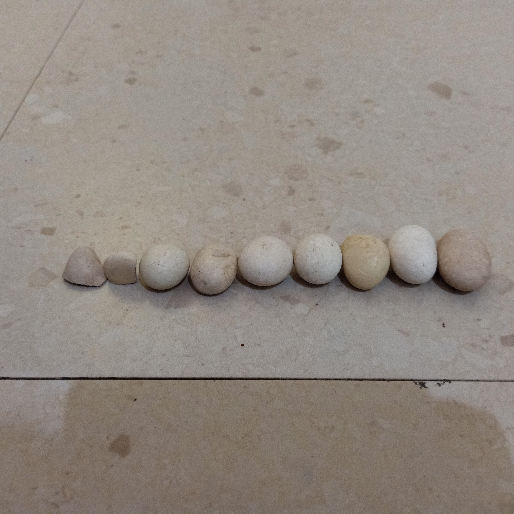
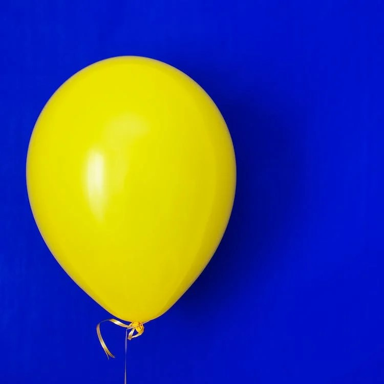

Project!
Categories
Games!

BSID|Belinda Server ID
Belinda Server ID V.1.3: New Building, New Road, New Toll Road, New Offroad, New Cars, New Vehicles, New House, New UI, New Secret (???) and Bug Fix!!!
Genre: Adventure | Platform: PC, Mobile, Tablet | Engine: Roblox Studio

The Balloon
The Balloon Beta Version!!!
Genre: Horror | Platform: PC, Mobile, Tablet | Engine: Roblox Studio
Musics!
Dondong opo Salak
0:00 / 0:00
3D Models!
Films/Animations!
UI/UX Designs!
Scripts!
Player_Script
extends KinematicBody
export var Walk = 7
export var Gravity = 50
export var Jump = 20
export var Run = 14
export var darah = 100
var Speed
var Aktif = true
var velocity = Vector3.ZERO
var tanah = Vector3.DOWN
onready var cam_plr = $Cam_Player
onready var Model = $Body
func _physics_process(delta):
if Aktif:
$Cam_Player/ClippedCamera.make_current()
Movement(delta)
elif !Aktif:
hide()
$CollisionShape.disabled = true
func Movement(delta):
var move = Vector3.ZERO
var lantai = is_on_floor() and tanah == Vector3.ZERO
var jump = is_on_floor() and Input.is_action_just_pressed("jump")
Speed = Walk
move.x = Input.get_action_strength("right") - Input.get_action_strength("left")
move.z = Input.get_action_strength("back") - Input.get_action_strength("forward")
move = move.rotated(Vector3.UP, cam_plr.rotation.y).normalized()
velocity.x = move.x * Speed
velocity.z = move.z * Speed
velocity.y -= Gravity * delta
if Input.is_action_pressed("run"):
Speed = Run
else:
Speed = Walk
if jump:
velocity.y = Jump
tanah = Vector3.ZERO
elif lantai:
tanah = Vector3.DOWN
velocity = move_and_slide_with_snap(velocity, tanah, Vector3.UP, true)
if velocity.length() > 0.2:
var Look = Vector2(velocity.z, velocity.x)
Model.rotation.y = Look.angle()
func _process(_delta):
cam_plr.translation = translation
Cam_Script
extends SpringArm
var zoom = 1.5
var zoom_speed = 0.1
var zoom_min = 0.5
var zoom_max = 3
func _unhandled_input(event):
if event is InputEventMouseMotion:
rotation_degrees.x -= event.relative.y * 0.05
rotation_degrees.x = clamp(rotation_degrees.x, -90, 30)
rotation_degrees.y -= event.relative.x * 0.05
rotation_degrees.y = wrapf(rotation_degrees.y, 0, 360)
if event.is_action_pressed("zoom_in"):
zoom -= zoom_speed
if event.is_action_pressed("zoom_out"):
zoom += zoom_speed
zoom = clamp(zoom, zoom_min, zoom_max)
func _process(_delta):
set_as_toplevel(true)
Input.set_mouse_mode(Input.MOUSE_MODE_VISIBLE)
if Input.is_action_pressed("cam_mouse"):
Input.set_mouse_mode(Input.MOUSE_MODE_CAPTURED)
scale = lerp(scale, Vector3.ONE * zoom, zoom_speed)
Car_Script
extends VehicleBody
var Max_Rpm = 500
var Max_Torque = 200
var Aktif = false
var Car_Zone = false
func _physics_process(delta):
if Aktif:
$Camera.make_current()
Movement(delta)
Exit_Car()
elif !Aktif:
Open_Car()
func Movement(delta):
steering = lerp(steering, Input.get_axis("right","left") * 0.4, 5 * delta)
var Akselerasi = Input.get_axis("back","forward")
var Rpm = abs($Roda_Belakang_Kiri.get_rpm())
$Roda_Belakang_Kiri.engine_force = Akselerasi * Max_Torque * (1 - Rpm / Max_Rpm)
Rpm = abs($Roda_Belakang_Kanan.get_rpm())
$Roda_Belakang_Kanan.engine_force = Akselerasi * Max_Torque * (1 - Rpm / Max_Rpm)
func Open_Car():
if Input.is_action_just_pressed("ui_accept") && Car_Zone == true:
var Hide_Player = get_parent().get_node("Player")
Hide_Player.visible = false
Aktif = true
func Exit_Car():
var Vehicle = $"."
var Hide_Player = get_parent().get_node("Player")
var New_Pos = Vehicle.global_transform.origin - 2 * Vehicle.global_transform.basis.x
if Car_Zone == false && Input.is_action_just_pressed("ui_accept"):
Hide_Player.visible = true
Aktif = false
Hide_Player.global_transform.origin = New_Pos
func _on_Area_body_entered(body):
if body.name == "Player":
Car_Zone = true
func _on_Area_body_exited(body):
if body.name == "Player":
Car_Zone = false
Test_Factorial
program Factorial;
uses
video;
var
i, input_value: longint;
factorial_value: qWord;
begin
ClearScreen;
writeln('Factorial Calculator');
writeln('Enter a positive integer:');
readln(input_value);
if input_value < 0 then
writeln('Usage: please input a non-negative integer')
else
begin
factorial_value := 1;
for i := 1 to input_value do
factorial_value := factorial_value * i;
if factorial_value = 0 then
writeln('inf')
else
begin
writeln(factorial_value);
end;
end;
end.
Theme_Script
--TODO: New_UI_V.1.5
local ts = game:GetService("TweenService")
local ti = TweenInfo.new(0.2, Enum.EasingStyle.Quint, Enum.EasingDirection.InOut)
local Button = script.Parent
local Help = script.Parent.Parent.Help
local Help_New = script.Parent.Parent.Help_Button_New
local Tombol = script.Parent.Parent.Tombol
local Hide = script.Parent.Parent.Hide_Button
local Hide_New = script.Parent.Parent.Hide_Button_New
local Hape = script.Parent.Parent.HP_Button
local Hape_New = script.Parent.Parent.HP_Button_New
local Danta = script.Parent.Parent.Danta_Admin
local Admin = script.Parent.Parent.Danta_Button
local Danta_New = script.Parent.Parent.Danta_Button_New
local Bantuan = script.Parent.Parent.Help_Button
local Waktu = script.Parent.Parent.Waktu
local Phone = script.Parent.Parent.My_Phone
local Garasi = script.Parent.Parent.Garasi_Mobil
local Status_Bar = script.Parent.Parent.Status_Bar
local Duit = script.Parent.Parent.Uang
local Akun = script.Parent.Parent.Account_Card
local Toko = script.Parent.Parent.Shop
local Performa = script.Parent.Parent.Performance
local Performa_New = script.Parent.Parent.Performance_New
local Donasi = script.Parent.Parent.Support
local Pengaturan = script.Parent.Parent.Pengaturan
local Media = script.Parent.Parent.Media_Player
local Notif = script.Parent.Parent.Notification
local Welcome = script.Parent.Parent.Welcome
local Map = script.Parent.Parent.Map
local Versi = script.Parent.Parent.Game_Version
local Versi_New = script.Parent.Parent.Game_Version_New
local Wait_Txt = script.Parent.Parent.Wait_Txt
local Server = script.Parent.Parent.Server_Name
local Info_Txt = script.Parent.Parent.Mouse_Txt
local Godot = script.Parent.Parent.Godot_Button
local Run = script.Parent.Parent.Run_Button
local Store = script.Parent.Parent.Store
local Kalkulator = script.Parent.Parent.Calculator
local Catatan = script.Parent.Parent.Notepad
local Notepad_PP = script.Parent.Parent.Notepad_PP
local Draw = script.Parent.Parent.Paint
local Tema_New = script.Parent.Parent.Theme_Button_New
local Koordinat = script.Parent.Parent.Coordinate
local Kerja = script.Parent.Parent.Job
local Respawn = script.Parent.Parent.Respawn_Screen
local GDScript = script.Parent.Parent.Godot_Game
-- Toogle Function;
local function Toogle()
if Button.Image == "rbxassetid://8498174594" then
Button.Image = "rbxassetid://8509432937"
Button.Info_Txt.Value = "Light Mode"
ts:Create(Button, ti, {BackgroundColor3 = Color3.fromRGB(255, 255, 255)}):Play()
ts:Create(Button, ti, {ImageColor3 = Color3.fromRGB(0, 0, 0)}):Play()
ts:Create(Button.UICorner, ti, {CornerRadius = UDim.new(1, 0)}):Play()
print("Light!") -- Light Mode;
Tema_New.Image = "rbxassetid://8509432937"
ts:Create(Tema_New, ti, {BackgroundColor3 = Color3.fromRGB(255, 255, 255)}):Play()
ts:Create(Tema_New, ti, {ImageColor3 = Color3.fromRGB(0, 0, 0)}):Play()
ts:Create(Help, ti, {BackgroundColor3 = Color3.fromRGB(255, 255, 255)}):Play()
ts:Create(Help.Title, ti, {TextColor3 = Color3.fromRGB(0, 0, 0)}):Play()
ts:Create(Help.Info, ti, {TextColor3 = Color3.fromRGB(0, 0, 0)}):Play()
ts:Create(Bantuan, ti, {BackgroundColor3 = Color3.fromRGB(255, 255, 255)}):Play()
ts:Create(Bantuan, ti, {TextColor3 = Color3.fromRGB(0, 0, 0)}):Play()
ts:Create(Help_New, ti, {BackgroundColor3 = Color3.fromRGB(255, 255, 255)}):Play()
ts:Create(Help_New, ti, {TextColor3 = Color3.fromRGB(0, 0, 0)}):Play()
ts:Create(Waktu, ti, {BackgroundColor3 = Color3.fromRGB(255, 255, 255)}):Play()
ts:Create(Waktu, ti, {TextColor3 = Color3.fromRGB(0, 0, 0)}):Play()
ts:Create(Danta_New, ti, {BackgroundColor3 = Color3.fromRGB(255, 255, 255)}):Play()
ts:Create(Danta_New, ti, {TextColor3 = Color3.fromRGB(0, 0, 0)}):Play()
ts:Create(Admin, ti, {BackgroundColor3 = Color3.fromRGB(255, 255, 255)}):Play()
ts:Create(Admin, ti, {TextColor3 = Color3.fromRGB(0, 0, 0)}):Play()
ts:Create(Danta, ti, {BackgroundColor3 = Color3.fromRGB(255, 255, 255)}):Play()
ts:Create(Danta.Title, ti, {TextColor3 = Color3.fromRGB(0, 0, 0)}):Play()
ts:Create(Danta.Run_Button, ti, {ImageColor3 = Color3.fromRGB(0, 0, 0)}):Play()
ts:Create(Danta.Script_Button, ti, {ImageColor3 = Color3.fromRGB(0, 0, 0)}):Play()
ts:Create(Danta.Clear_Button, ti, {ImageColor3 = Color3.fromRGB(0, 0, 0)}):Play()
ts:Create(Danta.Code, ti, {BackgroundColor3 = Color3.fromRGB(255, 255, 255)}):Play()
ts:Create(Danta.Code, ti, {TextColor3 = Color3.fromRGB(0, 0, 0)}):Play()
ts:Create(Danta.Command, ti, {ScrollBarImageColor3 = Color3.fromRGB(0, 0, 0)}):Play()
ts:Create(Danta.Command.TextLabel1, ti, {TextColor3 = Color3.fromRGB(0, 0, 0)}):Play()
ts:Create(Danta.Command.TextLabel2, ti, {TextColor3 = Color3.fromRGB(0, 0, 0)}):Play()
ts:Create(Danta.Command.TextLabel3, ti, {TextColor3 = Color3.fromRGB(0, 0, 0)}):Play()
ts:Create(Danta.Command.TextLabel4, ti, {TextColor3 = Color3.fromRGB(0, 0, 0)}):Play()
ts:Create(Danta.Command.TextLabel5, ti, {TextColor3 = Color3.fromRGB(0, 0, 0)}):Play()
ts:Create(Danta.Command.TextLabel6, ti, {TextColor3 = Color3.fromRGB(0, 0, 0)}):Play()
ts:Create(Danta.Command.TextLabel7, ti, {TextColor3 = Color3.fromRGB(0, 0, 0)}):Play()
ts:Create(Danta.Command.TextLabel8, ti, {TextColor3 = Color3.fromRGB(0, 0, 0)}):Play()
ts:Create(Danta.Command.TextLabel9, ti, {TextColor3 = Color3.fromRGB(0, 0, 0)}):Play()
ts:Create(Danta.Command.TextLabel10, ti, {TextColor3 = Color3.fromRGB(0, 0, 0)}):Play()
ts:Create(Danta.Command.TextLabel11, ti, {TextColor3 = Color3.fromRGB(0, 0, 0)}):Play()
ts:Create(Danta.Command.TextLabel12, ti, {TextColor3 = Color3.fromRGB(0, 0, 0)}):Play()
ts:Create(Danta.Command.TextLabel13, ti, {TextColor3 = Color3.fromRGB(0, 0, 0)}):Play()
ts:Create(Danta.Command.TextLabel14, ti, {TextColor3 = Color3.fromRGB(0, 0, 0)}):Play()
ts:Create(Danta.Command.TextLabel15, ti, {TextColor3 = Color3.fromRGB(0, 0, 0)}):Play()
ts:Create(Danta.Command.TextLabel16, ti, {TextColor3 = Color3.fromRGB(0, 0, 0)}):Play()
ts:Create(Danta.Command.TextLabel17, ti, {TextColor3 = Color3.fromRGB(0, 0, 0)}):Play()
ts:Create(Danta.Command.TextLabel18, ti, {TextColor3 = Color3.fromRGB(0, 0, 0)}):Play()
ts:Create(Danta.Command.TextLabel19, ti, {TextColor3 = Color3.fromRGB(0, 0, 0)}):Play()
ts:Create(Danta.Command.TextLabel20, ti, {TextColor3 = Color3.fromRGB(0, 0, 0)}):Play()
ts:Create(Danta.Command.TextLabel21, ti, {TextColor3 = Color3.fromRGB(0, 0, 0)}):Play()
ts:Create(Danta.Command.TextLabel22, ti, {TextColor3 = Color3.fromRGB(0, 0, 0)}):Play()
ts:Create(Danta.Command.TextLabel23, ti, {TextColor3 = Color3.fromRGB(0, 0, 0)}):Play()
ts:Create(Danta.Command.TextLabel24, ti, {TextColor3 = Color3.fromRGB(0, 0, 0)}):Play()
ts:Create(Danta.Command.TextLabel25, ti, {TextColor3 = Color3.fromRGB(0, 0, 0)}):Play()
ts:Create(Hide, ti, {BackgroundColor3 = Color3.fromRGB(255, 255, 255)}):Play()
ts:Create(Hide, ti, {ImageColor3 = Color3.fromRGB(0, 0, 0)}):Play()
ts:Create(Hide_New, ti, {BackgroundColor3 = Color3.fromRGB(255, 255, 255)}):Play()
ts:Create(Hide_New, ti, {ImageColor3 = Color3.fromRGB(0, 0, 0)}):Play()
ts:Create(Hape, ti, {BackgroundColor3 = Color3.fromRGB(255, 255, 255)}):Play()
ts:Create(Hape_New, ti, {BackgroundColor3 = Color3.fromRGB(255, 255, 255)}):Play()
ts:Create(Tombol, ti, {BackgroundColor3 = Color3.fromRGB(255, 255, 255)}):Play()
ts:Create(Tombol.Tombol_Geser, ti, {BackgroundColor3 = Color3.fromRGB(255, 255, 255)}):Play()
ts:Create(Tombol.Tombol_Geser, ti, {TextColor3 = Color3.fromRGB(0, 0, 0)}):Play()
ts:Create(Tombol.Frame, ti, {BackgroundColor3 = Color3.fromRGB(0, 0, 0)}):Play()
ts:Create(Phone, ti, {ImageColor3 = Color3.fromRGB(255, 255, 255)}):Play()
ts:Create(Phone.Home_Button, ti, {BackgroundColor3 = Color3.fromRGB(0, 0, 0)}):Play()
ts:Create(Garasi.Judul, ti, {BackgroundColor3 = Color3.fromRGB(255, 255, 255)}):Play()
ts:Create(Garasi.Garage, ti, {BackgroundColor3 = Color3.fromRGB(255, 255, 255)}):Play()
ts:Create(Garasi.Garage.Kendaraan, ti, {ScrollBarImageColor3 = Color3.fromRGB(0, 0, 0)}):Play()
ts:Create(Garasi.Garage.Kendaraan["Toyota Camry"], ti, {BackgroundColor3 = Color3.fromRGB(0, 0, 0), TextColor3 = Color3.fromRGB(255, 255, 255)}):Play()
ts:Create(Garasi.Garage.Kendaraan.Car, ti, {BackgroundColor3 = Color3.fromRGB(0, 0, 0), TextColor3 = Color3.fromRGB(255, 255, 255)}):Play()
ts:Create(Garasi.Judul.TextLabel, ti, {TextColor3 = Color3.fromRGB(0, 0, 0)}):Play()
ts:Create(Garasi.Tutup, ti, {BackgroundColor3 = Color3.fromRGB(255, 255, 255)}):Play()
ts:Create(Status_Bar, ti, {BackgroundColor3 = Color3.fromRGB(255, 255, 255)}):Play()
ts:Create(Status_Bar.Judul, ti, {TextColor3 = Color3.fromRGB(0, 0, 0)}):Play()
ts:Create(Status_Bar.Ikon, ti, {ImageColor3 = Color3.fromRGB(0, 0, 0)}):Play()
ts:Create(Status_Bar.Makan, ti, {BackgroundColor3 = Color3.fromRGB(255, 255, 255)}):Play()
ts:Create(Status_Bar.Makan.Laper.UIGradient, ti, {Rotation = 180}):Play()
ts:Create(Status_Bar.Persen_Makan, ti, {TextColor3 = Color3.fromRGB(0, 0, 0)}):Play()
ts:Create(Status_Bar.Minum, ti, {BackgroundColor3 = Color3.fromRGB(255, 255, 255)}):Play()
ts:Create(Status_Bar.Minum.Haus.UIGradient, ti, {Rotation = 180}):Play()
ts:Create(Status_Bar.Persen_Minum, ti, {TextColor3 = Color3.fromRGB(0, 0, 0)}):Play()
ts:Create(Status_Bar.Game_Time, ti, {BackgroundColor3 = Color3.fromRGB(0, 0, 0)}):Play()
ts:Create(Status_Bar.Game_Time, ti, {TextColor3 = Color3.fromRGB(255, 255, 255)}):Play()
ts:Create(Status_Bar.Game_Time.Ikon, ti, {ImageColor3 = Color3.fromRGB(0, 0, 0)}):Play()
ts:Create(Status_Bar.Darah, ti, {BackgroundColor3 = Color3.fromRGB(0, 0, 0)}):Play()
ts:Create(Status_Bar.Darah, ti, {TextColor3 = Color3.fromRGB(255, 255, 255)}):Play()
ts:Create(Status_Bar.Darah.Ikon, ti, {ImageColor3 = Color3.fromRGB(255, 255, 255)}):Play()
ts:Create(Status_Bar.Kecepatan, ti, {BackgroundColor3 = Color3.fromRGB(0, 0, 0)}):Play()
ts:Create(Status_Bar.Kecepatan, ti, {TextColor3 = Color3.fromRGB(255, 255, 255)}):Play()
ts:Create(Status_Bar.Kecepatan.Ikon, ti, {ImageColor3 = Color3.fromRGB(255, 255, 255)}):Play()
ts:Create(Status_Bar.Ribbon_Button, ti, {TextColor3 = Color3.fromRGB(0, 0, 0)}):Play()
ts:Create(Akun, ti, {BackgroundColor3 = Color3.fromRGB(255, 255, 255)}):Play()
ts:Create(Akun.Profil, ti, {BackgroundColor3 = Color3.fromRGB(0, 0, 0)}):Play()
ts:Create(Akun.Frame, ti, {BackgroundColor3 = Color3.fromRGB(0, 0, 0)}):Play()
ts:Create(Akun.User_Name, ti, {TextColor3 = Color3.fromRGB(0, 0, 0)}):Play()
ts:Create(Akun.Lang_Name, ti, {TextColor3 = Color3.fromRGB(0, 0, 0)}):Play()
ts:Create(Duit, ti, {BackgroundColor3 = Color3.fromRGB(255, 255, 255)}):Play()
ts:Create(Duit, ti, {TextColor3 = Color3.fromRGB(0, 0, 0)}):Play()
ts:Create(Duit.Duit, ti, {TextColor3 = Color3.fromRGB(0, 0, 0)}):Play()
ts:Create(Duit.Ikon, ti, {ImageColor3 = Color3.fromRGB(0, 0, 0)}):Play()
ts:Create(Toko, ti, {BackgroundColor3 = Color3.fromRGB(255, 255, 255)}):Play()
ts:Create(Toko.Title, ti, {TextColor3 = Color3.fromRGB(0, 0, 0)}):Play()
ts:Create(Toko.Info, ti, {TextColor3 = Color3.fromRGB(0, 0, 0)}):Play()
ts:Create(Toko.Items_Button, ti, {TextColor3 = Color3.fromRGB(0, 0, 0)}):Play()
ts:Create(Toko.Home_Button, ti, {ImageColor3 = Color3.fromRGB(0, 0, 0)}):Play()
ts:Create(Toko.Food_Button, ti, {TextColor3 = Color3.fromRGB(0, 0, 0)}):Play()
ts:Create(Toko.Drinks_Button, ti, {TextColor3 = Color3.fromRGB(0, 0, 0)}):Play()
ts:Create(Toko.Gamepass_Button, ti, {TextColor3 = Color3.fromRGB(0, 0, 0)}):Play()
ts:Create(Toko.Sell_Button, ti, {TextColor3 = Color3.fromRGB(0, 0, 0)}):Play()
ts:Create(Toko.Tools, ti, {ScrollBarImageColor3 = Color3.fromRGB(0, 0, 0)}):Play()
ts:Create(Toko.Foods, ti, {ScrollBarImageColor3 = Color3.fromRGB(0, 0, 0)}):Play()
ts:Create(Toko.Drinks, ti, {ScrollBarImageColor3 = Color3.fromRGB(0, 0, 0)}):Play()
ts:Create(Toko.Gamepass, ti, {ScrollBarImageColor3 = Color3.fromRGB(0, 0, 0)}):Play()
ts:Create(Toko.Tools.Item1.TextLabel, ti, {TextColor3 = Color3.fromRGB(0, 0, 0)}):Play()
ts:Create(Toko.Tools.Item2.TextLabel, ti, {TextColor3 = Color3.fromRGB(0, 0, 0)}):Play()
ts:Create(Toko.Tools.Item3.TextLabel, ti, {TextColor3 = Color3.fromRGB(0, 0, 0)}):Play()
ts:Create(Toko.Tools.Item4.TextLabel, ti, {TextColor3 = Color3.fromRGB(0, 0, 0)}):Play()
ts:Create(Toko.Tools.Item5.TextLabel, ti, {TextColor3 = Color3.fromRGB(0, 0, 0)}):Play()
ts:Create(Toko.Foods.Item1.TextLabel, ti, {TextColor3 = Color3.fromRGB(0, 0, 0)}):Play()
ts:Create(Toko.Foods.Item2.TextLabel, ti, {TextColor3 = Color3.fromRGB(0, 0, 0)}):Play()
ts:Create(Toko.Foods.Item3.TextLabel, ti, {TextColor3 = Color3.fromRGB(0, 0, 0)}):Play()
ts:Create(Toko.Drinks.Item1.TextLabel, ti, {TextColor3 = Color3.fromRGB(0, 0, 0)}):Play()
ts:Create(Toko.Drinks.Item2.TextLabel, ti, {TextColor3 = Color3.fromRGB(0, 0, 0)}):Play()
ts:Create(Toko.Drinks.Item3.TextLabel, ti, {TextColor3 = Color3.fromRGB(0, 0, 0)}):Play()
ts:Create(Toko.Gamepass.Item1.TextLabel, ti, {TextColor3 = Color3.fromRGB(0, 0, 0)}):Play()
ts:Create(Toko.Gamepass.Item2.TextLabel, ti, {TextColor3 = Color3.fromRGB(0, 0, 0)}):Play()
ts:Create(Toko.Gamepass.Item1.ImageLabel, ti, {ImageColor3 = Color3.fromRGB(0, 0, 0)}):Play()
ts:Create(Toko.Gamepass.Item2.ImageLabel, ti, {ImageColor3 = Color3.fromRGB(0, 0, 0)}):Play()
ts:Create(Toko.Store_Button, ti, {ImageColor3 = Color3.fromRGB(0, 0, 0)}):Play()
ts:Create(Store, ti, {BackgroundColor3 = Color3.fromRGB(255, 255, 255)}):Play()
ts:Create(Store.Title, ti, {TextColor3 = Color3.fromRGB(0, 0, 0)}):Play()
ts:Create(Store.Info, ti, {TextColor3 = Color3.fromRGB(0, 0, 0)}):Play()
ts:Create(Store.Home_Button, ti, {ImageColor3 = Color3.fromRGB(0, 0, 0)}):Play()
ts:Create(Store.Back_Button, ti, {TextColor3 = Color3.fromRGB(0, 0, 0)}):Play()
ts:Create(Store.Category, ti, {ScrollBarImageColor3 = Color3.fromRGB(0, 0, 0)}):Play()
ts:Create(Store.Category.Category1, ti, {TextColor3 = Color3.fromRGB(0, 0, 0)}):Play()
ts:Create(Store.Category.Category2, ti, {TextColor3 = Color3.fromRGB(0, 0, 0)}):Play()
ts:Create(Performa, ti, {BackgroundColor3 = Color3.fromRGB(255, 255, 255)}):Play()
ts:Create(Performa.FPS, ti, {TextColor3 = Color3.fromRGB(0, 0, 0)}):Play()
ts:Create(Performa.Ping, ti, {TextColor3 = Color3.fromRGB(0, 0, 0)}):Play()
ts:Create(Performa_New, ti, {BackgroundColor3 = Color3.fromRGB(255, 255, 255)}):Play()
ts:Create(Performa_New.FPS, ti, {TextColor3 = Color3.fromRGB(0, 0, 0)}):Play()
ts:Create(Performa_New.Ping, ti, {TextColor3 = Color3.fromRGB(0, 0, 0)}):Play()
ts:Create(Donasi, ti, {BackgroundColor3 = Color3.fromRGB(255, 255, 255)}):Play()
ts:Create(Donasi.Title, ti, {TextColor3 = Color3.fromRGB(0, 0, 0)}):Play()
ts:Create(Donasi.Donasi, ti, {ScrollBarImageColor3 = Color3.fromRGB(0, 0, 0)}):Play()
ts:Create(Pengaturan, ti, {BackgroundColor3 = Color3.fromRGB(255, 255, 255)}):Play()
ts:Create(Pengaturan.TextLabel, ti, {TextColor3 = Color3.fromRGB(0, 0, 0)}):Play()
ts:Create(Pengaturan.ScrollingFrame, ti, {ScrollBarImageColor3 = Color3.fromRGB(0, 0, 0)}):Play()
ts:Create(Pengaturan.ScrollingFrame.TextLabel, ti, {TextColor3 = Color3.fromRGB(0, 0, 0)}):Play()
ts:Create(Pengaturan.ScrollingFrame.TextLabel2, ti, {TextColor3 = Color3.fromRGB(0, 0, 0)}):Play()
ts:Create(Pengaturan.ScrollingFrame.TextLabel3, ti, {TextColor3 = Color3.fromRGB(0, 0, 0)}):Play()
ts:Create(Pengaturan.ScrollingFrame.TextLabel4, ti, {TextColor3 = Color3.fromRGB(0, 0, 0)}):Play()
ts:Create(Pengaturan.ScrollingFrame.TextLabel5, ti, {TextColor3 = Color3.fromRGB(0, 0, 0)}):Play()
ts:Create(Pengaturan.ScrollingFrame.TextLabel6, ti, {TextColor3 = Color3.fromRGB(0, 0, 0)}):Play()
ts:Create(Media.Menu, ti, {BackgroundColor3 = Color3.fromRGB(255, 255, 255)}):Play()
ts:Create(Media.Menu.Search_Button, ti, {ImageColor3 = Color3.fromRGB(0, 0, 0)}):Play()
ts:Create(Media.Menu.Home_Button, ti, {ImageColor3 = Color3.fromRGB(0, 0, 0)}):Play()
ts:Create(Media.Menu.Frame, ti, {BackgroundColor3 = Color3.fromRGB(0, 0, 0)}):Play()
ts:Create(Media.Main, ti, {BackgroundColor3 = Color3.fromRGB(255, 255, 255)}):Play()
ts:Create(Media.Main.Cari.Clear_Button, ti, {ImageColor3 = Color3.fromRGB(0, 0, 0)}):Play()
ts:Create(Media.Main.Cari.Pencarian, ti, {BackgroundColor3 = Color3.fromRGB(255, 255, 255)}):Play()
ts:Create(Media.Main.Cari.Pencarian, ti, {TextColor3 = Color3.fromRGB(0, 0, 0)}):Play()
ts:Create(Media.Main.Cari.Pencarian.Hover_Text, ti, {TextColor3 = Color3.fromRGB(0, 0, 0)}):Play()
ts:Create(Media.Main.Cari.Top, ti, {TextColor3 = Color3.fromRGB(0, 0, 0)}):Play()
ts:Create(Media.Main.Info, ti, {TextColor3 = Color3.fromRGB(0, 0, 0)}):Play()
ts:Create(Media.Main.Title, ti, {TextColor3 = Color3.fromRGB(0, 0, 0)}):Play()
ts:Create(Media.Main.Radio_Player.Sound_Button, ti, {ImageColor3 = Color3.fromRGB(0, 0, 0)}):Play()
ts:Create(Media.Main.Radio_Player.Artis, ti, {TextColor3 = Color3.fromRGB(0, 0, 0)}):Play()
ts:Create(Media.Main.Radio_Player.Duration, ti, {TextColor3 = Color3.fromRGB(0, 0, 0)}):Play()
ts:Create(Media.Main.Radio_Player.Durasi, ti, {TextColor3 = Color3.fromRGB(0, 0, 0)}):Play()
ts:Create(Media.Main.Radio_Player.Durasi2, ti, {TextColor3 = Color3.fromRGB(0, 0, 0)}):Play()
ts:Create(Media.Main.Radio_Player.Durasi3, ti, {TextColor3 = Color3.fromRGB(0, 0, 0)}):Play()
ts:Create(Media.Main.Radio_Player.Vol, ti, {TextColor3 = Color3.fromRGB(0, 0, 0)}):Play()
ts:Create(Media.Main.Radio_Player.Judul_Lagu, ti, {TextColor3 = Color3.fromRGB(0, 0, 0)}):Play()
ts:Create(Media.Main.Radio_Player.Playlist_Title, ti, {TextColor3 = Color3.fromRGB(0, 0, 0)}):Play()
ts:Create(Media.Main.Radio_Player.Playlist, ti, {ScrollBarImageColor3 = Color3.fromRGB(0, 0, 0)}):Play()
ts:Create(Media.Main.Radio_Player.Vol_Up, ti, {BackgroundColor3 = Color3.fromRGB(0, 0, 0)}):Play()
ts:Create(Media.Main.Radio_Player.Vol_Up, ti, {TextColor3 = Color3.fromRGB(255, 255, 255)}):Play()
ts:Create(Media.Main.Radio_Player.Vol_Down, ti, {BackgroundColor3 = Color3.fromRGB(0, 0, 0)}):Play()
ts:Create(Media.Main.Radio_Player.Vol_Down, ti, {TextColor3 = Color3.fromRGB(255, 255, 255)}):Play()
ts:Create(Media.Main.Radio_Player.Visual.Line, ti, {BackgroundColor3 = Color3.fromRGB(0, 0, 0)}):Play()
ts:Create(Media.Main.Radio_Player.Visual.C, ti, {BackgroundColor3 = Color3.fromRGB(0, 0, 0)}):Play()
ts:Create(Media.Main.Radio_Player.Visual["C#"], ti, {BackgroundColor3 = Color3.fromRGB(0, 0, 0)}):Play()
ts:Create(Media.Main.Radio_Player.Visual.D, ti, {BackgroundColor3 = Color3.fromRGB(0, 0, 0)}):Play()
ts:Create(Media.Main.Radio_Player.Visual.Eb, ti, {BackgroundColor3 = Color3.fromRGB(0, 0, 0)}):Play()
ts:Create(Media.Main.Radio_Player.Visual.E, ti, {BackgroundColor3 = Color3.fromRGB(0, 0, 0)}):Play()
ts:Create(Media.Main.Radio_Player.Visual.F, ti, {BackgroundColor3 = Color3.fromRGB(0, 0, 0)}):Play()
ts:Create(Media.Main.Radio_Player.Visual["F#"], ti, {BackgroundColor3 = Color3.fromRGB(0, 0, 0)}):Play()
ts:Create(Media.Main.Radio_Player.Visual.G, ti, {BackgroundColor3 = Color3.fromRGB(0, 0, 0)}):Play()
ts:Create(Media.Main.Radio_Player.Visual.Ab, ti, {BackgroundColor3 = Color3.fromRGB(0, 0, 0)}):Play()
ts:Create(Media.Main.Radio_Player.Visual.A, ti, {BackgroundColor3 = Color3.fromRGB(0, 0, 0)}):Play()
ts:Create(Media.Main.Radio_Player.Visual.Bb, ti, {BackgroundColor3 = Color3.fromRGB(0, 0, 0)}):Play()
ts:Create(Media.Main.Radio_Player.Visual.B, ti, {BackgroundColor3 = Color3.fromRGB(0, 0, 0)}):Play()
ts:Create(Media.Main.Radio_Player.Visual.C2, ti, {BackgroundColor3 = Color3.fromRGB(0, 0, 0)}):Play()
ts:Create(Media.Main.Radio_Player.Visual["C#2"], ti, {BackgroundColor3 = Color3.fromRGB(0, 0, 0)}):Play()
ts:Create(Media.Main.Radio_Player.Visual.D2, ti, {BackgroundColor3 = Color3.fromRGB(0, 0, 0)}):Play()
ts:Create(Media.Main.Radio_Player.TextBox, ti, {BackgroundColor3 = Color3.fromRGB(255, 255, 255)}):Play()
ts:Create(Media.Main.Radio_Player.TextBox, ti, {TextColor3 = Color3.fromRGB(0, 0, 0)}):Play()
ts:Create(Media.Main.Video_Player.TextBox, ti, {BackgroundColor3 = Color3.fromRGB(255, 255, 255)}):Play()
ts:Create(Media.Main.Video_Player.TextBox, ti, {TextColor3 = Color3.fromRGB(0, 0, 0)}):Play()
ts:Create(Media.Main.Video_Player.VideoFrame, ti, {BackgroundColor3 = Color3.fromRGB(220, 220, 220)}):Play()
ts:Create(Media.Main.Video_Player.Menu_Video, ti, {BackgroundColor3 = Color3.fromRGB(255, 255, 255)}):Play()
ts:Create(Media.Main.Video_Player.Menu_Video.Sound_Button, ti, {ImageColor3 = Color3.fromRGB(0, 0, 0)}):Play()
ts:Create(Media.Main.Video_Player.Menu_Video.Property_Button, ti, {ImageColor3 = Color3.fromRGB(0, 0, 0)}):Play()
ts:Create(Media.Main.Video_Player.Menu_Video.Vol_Set.Vol_Txt, ti, {TextColor3 = Color3.fromRGB(0, 0, 0)}):Play()
ts:Create(Media.Main.Video_Player.Menu_Video.Vol_Set.Vol_Up, ti, {BackgroundColor3 = Color3.fromRGB(0, 0, 0)}):Play()
ts:Create(Media.Main.Video_Player.Menu_Video.Vol_Set.Vol_Up, ti, {TextColor3 = Color3.fromRGB(255, 255, 255)}):Play()
ts:Create(Media.Main.Video_Player.Menu_Video.Vol_Set.Vol_Down, ti, {BackgroundColor3 = Color3.fromRGB(0, 0, 0)}):Play()
ts:Create(Media.Main.Video_Player.Menu_Video.Vol_Set.Vol_Down, ti, {TextColor3 = Color3.fromRGB(255, 255, 255)}):Play()
ts:Create(Media.Main.Video_Player.Menu_Video.Durasi, ti, {TextColor3 = Color3.fromRGB(0, 0, 0)}):Play()
ts:Create(Media.Main.Video_Player.Menu_Video.F_Button, ti, {TextColor3 = Color3.fromRGB(0, 0, 0)}):Play()
ts:Create(Media.Main.Video_Player.Nama_Video, ti, {TextColor3 = Color3.fromRGB(0, 0, 0)}):Play()
ts:Create(Media.Main.Video_Player.Nama_Video, ti, {BackgroundColor3 = Color3.fromRGB(255, 255, 255)}):Play()
ts:Create(Media.Main.Video_Player.Menu_Video.Bar, ti, {BackgroundColor3 = Color3.fromRGB(255, 255, 255)}):Play()
ts:Create(Media.Main.Video_Player.Menu_Video.Bar.Slider, ti, {BackgroundColor3 = Color3.fromRGB(0, 0, 0)}):Play()
ts:Create(Media.Main.Photo.TextBox, ti, {BackgroundColor3 = Color3.fromRGB(255, 255, 255)}):Play()
ts:Create(Media.Main.Photo.TextBox, ti, {TextColor3 = Color3.fromRGB(0, 0, 0)}):Play()
ts:Create(Media.Main.Photo.Nama_Foto, ti, {TextColor3 = Color3.fromRGB(0, 0, 0)}):Play()
ts:Create(Notif, ti, {BackgroundColor3 = Color3.fromRGB(255, 255, 255)}):Play()
ts:Create(Notif.TextLabel, ti, {TextColor3 = Color3.fromRGB(0, 0, 0)}):Play()
ts:Create(Notif.ImageLabel, ti, {ImageColor3 = Color3.fromRGB(0, 0, 0)}):Play()
ts:Create(Notif.Info, ti, {TextColor3 = Color3.fromRGB(0, 0, 0)}):Play()
ts:Create(Welcome, ti, {BackgroundColor3 = Color3.fromRGB(255, 255, 255)}):Play()
ts:Create(Welcome.TextLabel, ti, {TextColor3 = Color3.fromRGB(0, 0, 0)}):Play()
ts:Create(Welcome.ImageLabel, ti, {ImageColor3 = Color3.fromRGB(0, 0, 0)}):Play()
ts:Create(Welcome.Selamat_Datang, ti, {TextColor3 = Color3.fromRGB(0, 0, 0)}):Play()
ts:Create(Map, ti, {BackgroundColor3 = Color3.fromRGB(255, 255, 255)}):Play()
ts:Create(Map.Judul, ti, {TextColor3 = Color3.fromRGB(0, 0, 0)}):Play()
ts:Create(Map.Judul, ti, {BackgroundColor3 = Color3.fromRGB(255, 255, 255)}):Play()
ts:Create(Map.Zoom, ti, {BackgroundColor3 = Color3.fromRGB(255, 255, 255)}):Play()
ts:Create(Map.Zoom.Zoom_In, ti, {TextColor3 = Color3.fromRGB(0, 0, 0)}):Play()
ts:Create(Map.Zoom.Zoom_Out, ti, {TextColor3 = Color3.fromRGB(0, 0, 0)}):Play()
ts:Create(Map.Panah, ti, {ImageColor3 = Color3.fromRGB(0, 0, 0)}):Play()
ts:Create(Map.Coordinate_Button, ti, {ImageColor3 = Color3.fromRGB(0, 0, 0)}):Play()
ts:Create(Versi, ti, {BackgroundColor3 = Color3.fromRGB(255, 255, 255)}):Play()
ts:Create(Versi, ti, {TextColor3 = Color3.fromRGB(0, 0, 0)}):Play()
ts:Create(Versi_New, ti, {BackgroundColor3 = Color3.fromRGB(255, 255, 255)}):Play()
ts:Create(Versi_New, ti, {TextColor3 = Color3.fromRGB(0, 0, 0)}):Play()
ts:Create(Wait_Txt, ti, {TextColor3 = Color3.fromRGB(0, 0, 0)}):Play()
ts:Create(Wait_Txt, ti, {BackgroundColor3 = Color3.fromRGB(255, 255, 255)}):Play()
ts:Create(Server, ti, {TextColor3 = Color3.fromRGB(0, 0, 0)}):Play()
ts:Create(Server, ti, {TextStrokeColor3 = Color3.fromRGB(255, 255, 255)}):Play()
ts:Create(Info_Txt, ti, {BackgroundColor3 = Color3.fromRGB(255, 255, 255)}):Play()
ts:Create(Info_Txt, ti, {TextColor3 = Color3.fromRGB(0, 0, 0)}):Play()
ts:Create(Godot, ti, {BackgroundColor3 = Color3.fromRGB(255, 255, 255)}):Play()
ts:Create(Godot, ti, {ImageColor3 = Color3.fromRGB(0, 0, 0)}):Play()
ts:Create(Run, ti, {BackgroundColor3 = Color3.fromRGB(255, 255, 255)}):Play()
ts:Create(Run, ti, {ImageColor3 = Color3.fromRGB(0, 0, 0)}):Play()
ts:Create(Kalkulator, ti, {BackgroundColor3 = Color3.fromRGB(255, 255, 255)}):Play()
ts:Create(Kalkulator.Title, ti, {TextColor3 = Color3.fromRGB(0, 0, 0)}):Play()
ts:Create(Kalkulator.Input, ti, {TextColor3 = Color3.fromRGB(0, 0, 0)}):Play()
ts:Create(Kalkulator.Zero, ti, {TextColor3 = Color3.fromRGB(0, 0, 0)}):Play()
ts:Create(Kalkulator["*"], ti, {TextColor3 = Color3.fromRGB(0, 0, 0)}):Play()
ts:Create(Kalkulator["+"], ti, {TextColor3 = Color3.fromRGB(0, 0, 0)}):Play()
ts:Create(Kalkulator["-"], ti, {TextColor3 = Color3.fromRGB(0, 0, 0)}):Play()
ts:Create(Kalkulator["/"], ti, {TextColor3 = Color3.fromRGB(0, 0, 0)}):Play()
ts:Create(Kalkulator["0"], ti, {TextColor3 = Color3.fromRGB(0, 0, 0)}):Play()
ts:Create(Kalkulator["1"], ti, {TextColor3 = Color3.fromRGB(0, 0, 0)}):Play()
ts:Create(Kalkulator["2"], ti, {TextColor3 = Color3.fromRGB(0, 0, 0)}):Play()
ts:Create(Kalkulator["3"], ti, {TextColor3 = Color3.fromRGB(0, 0, 0)}):Play()
ts:Create(Kalkulator["4"], ti, {TextColor3 = Color3.fromRGB(0, 0, 0)}):Play()
ts:Create(Kalkulator["5"], ti, {TextColor3 = Color3.fromRGB(0, 0, 0)}):Play()
ts:Create(Kalkulator["6"], ti, {TextColor3 = Color3.fromRGB(0, 0, 0)}):Play()
ts:Create(Kalkulator["7"], ti, {TextColor3 = Color3.fromRGB(0, 0, 0)}):Play()
ts:Create(Kalkulator["8"], ti, {TextColor3 = Color3.fromRGB(0, 0, 0)}):Play()
ts:Create(Kalkulator["9"], ti, {TextColor3 = Color3.fromRGB(0, 0, 0)}):Play()
ts:Create(Kalkulator.C, ti, {TextColor3 = Color3.fromRGB(0, 0, 0)}):Play()
ts:Create(Kalkulator.CE, ti, {TextColor3 = Color3.fromRGB(0, 0, 0)}):Play()
ts:Create(Kalkulator["="], ti, {TextColor3 = Color3.fromRGB(0, 0, 0)}):Play()
ts:Create(Kalkulator[","], ti, {TextColor3 = Color3.fromRGB(0, 0, 0)}):Play()
ts:Create(Kalkulator.Pi, ti, {TextColor3 = Color3.fromRGB(0, 0, 0)}):Play()
ts:Create(Kalkulator.X, ti, {TextColor3 = Color3.fromRGB(0, 0, 0)}):Play()
ts:Create(Kalkulator["*"], ti, {BackgroundColor3 = Color3.fromRGB(211, 211, 211)}):Play()
ts:Create(Kalkulator["+"], ti, {BackgroundColor3 = Color3.fromRGB(211, 211, 211)}):Play()
ts:Create(Kalkulator["-"], ti, {BackgroundColor3 = Color3.fromRGB(211, 211, 211)}):Play()
ts:Create(Kalkulator["/"], ti, {BackgroundColor3 = Color3.fromRGB(211, 211, 211)}):Play()
ts:Create(Kalkulator["0"], ti, {BackgroundColor3 = Color3.fromRGB(220, 220, 220)}):Play()
ts:Create(Kalkulator["1"], ti, {BackgroundColor3 = Color3.fromRGB(220, 220, 220)}):Play()
ts:Create(Kalkulator["2"], ti, {BackgroundColor3 = Color3.fromRGB(220, 220, 220)}):Play()
ts:Create(Kalkulator["3"], ti, {BackgroundColor3 = Color3.fromRGB(220, 220, 220)}):Play()
ts:Create(Kalkulator["4"], ti, {BackgroundColor3 = Color3.fromRGB(220, 220, 220)}):Play()
ts:Create(Kalkulator["5"], ti, {BackgroundColor3 = Color3.fromRGB(220, 220, 220)}):Play()
ts:Create(Kalkulator["6"], ti, {BackgroundColor3 = Color3.fromRGB(220, 220, 220)}):Play()
ts:Create(Kalkulator["7"], ti, {BackgroundColor3 = Color3.fromRGB(220, 220, 220)}):Play()
ts:Create(Kalkulator["8"], ti, {BackgroundColor3 = Color3.fromRGB(220, 220, 220)}):Play()
ts:Create(Kalkulator["9"], ti, {BackgroundColor3 = Color3.fromRGB(220, 220, 220)}):Play()
ts:Create(Kalkulator.C, ti, {BackgroundColor3 = Color3.fromRGB(211, 211, 211)}):Play()
ts:Create(Kalkulator.CE, ti, {BackgroundColor3 = Color3.fromRGB(211, 211, 211)}):Play()
ts:Create(Kalkulator["="], ti, {BackgroundColor3 = Color3.fromRGB(211, 211, 211)}):Play()
ts:Create(Kalkulator[","], ti, {BackgroundColor3 = Color3.fromRGB(220, 220, 220)}):Play()
ts:Create(Kalkulator.Pi, ti, {BackgroundColor3 = Color3.fromRGB(220, 220, 220)}):Play()
ts:Create(Kalkulator.X, ti, {BackgroundColor3 = Color3.fromRGB(211, 211, 211)}):Play()
ts:Create(Catatan, ti, {BackgroundColor3 = Color3.fromRGB(255, 255, 255)}):Play()
ts:Create(Catatan.Title, ti, {TextColor3 = Color3.fromRGB(0, 0, 0)}):Play()
ts:Create(Catatan.Bar_Status.Info1, ti, {TextColor3 = Color3.fromRGB(0, 0, 0)}):Play()
ts:Create(Catatan.Bar_Status.Info2, ti, {TextColor3 = Color3.fromRGB(0, 0, 0)}):Play()
ts:Create(Catatan.Bar_Status.Info3, ti, {TextColor3 = Color3.fromRGB(0, 0, 0)}):Play()
ts:Create(Catatan.Bar_Status.Info4, ti, {TextColor3 = Color3.fromRGB(0, 0, 0)}):Play()
ts:Create(Catatan.Bar_Status.Info5, ti, {TextColor3 = Color3.fromRGB(0, 0, 0)}):Play()
ts:Create(Catatan.Bar_Status.Char1, ti, {TextColor3 = Color3.fromRGB(0, 0, 0)}):Play()
ts:Create(Catatan.Bar_Status.Char2, ti, {TextColor3 = Color3.fromRGB(0, 0, 0)}):Play()
ts:Create(Catatan.Bar_Status.Char3, ti, {TextColor3 = Color3.fromRGB(0, 0, 0)}):Play()
ts:Create(Catatan.Bar_Status.Char4, ti, {TextColor3 = Color3.fromRGB(0, 0, 0)}):Play()
ts:Create(Catatan.Bar_Status.Char5, ti, {TextColor3 = Color3.fromRGB(0, 0, 0)}):Play()
ts:Create(Catatan.Bar_Status.Persen, ti, {TextColor3 = Color3.fromRGB(0, 0, 0)}):Play()
ts:Create(Catatan.Bar_Status.Unix, ti, {TextColor3 = Color3.fromRGB(0, 0, 0)}):Play()
ts:Create(Catatan.Bar_Status.Unicode, ti, {TextColor3 = Color3.fromRGB(0, 0, 0)}):Play()
ts:Create(Catatan.Tool_Bar, ti, {BackgroundColor3 = Color3.fromRGB(220, 220, 220)}):Play()
ts:Create(Catatan.Tool_Bar.File_Button, ti, {TextColor3 = Color3.fromRGB(0, 0, 0)}):Play()
ts:Create(Catatan.Tool_Bar.Edit_Button, ti, {TextColor3 = Color3.fromRGB(0, 0, 0)}):Play()
ts:Create(Catatan.Tool_Bar.View_Button, ti, {TextColor3 = Color3.fromRGB(0, 0, 0)}):Play()
ts:Create(Catatan.Buku.Catatan1, ti, {ScrollBarImageColor3 = Color3.fromRGB(0, 0, 0)}):Play()
ts:Create(Catatan.Buku.Catatan1.Kertas, ti, {BackgroundColor3 = Color3.fromRGB(255, 255, 255)}):Play()
ts:Create(Catatan.Buku.Catatan1.Kertas, ti, {TextColor3 = Color3.fromRGB(0, 0, 0)}):Play()
ts:Create(Catatan.Buku.Catatan2, ti, {ScrollBarImageColor3 = Color3.fromRGB(0, 0, 0)}):Play()
ts:Create(Catatan.Buku.Catatan2.Kertas, ti, {BackgroundColor3 = Color3.fromRGB(255, 255, 255)}):Play()
ts:Create(Catatan.Buku.Catatan2.Kertas, ti, {TextColor3 = Color3.fromRGB(0, 0, 0)}):Play()
ts:Create(Catatan.Buku.Catatan3, ti, {ScrollBarImageColor3 = Color3.fromRGB(0, 0, 0)}):Play()
ts:Create(Catatan.Buku.Catatan3.Kertas, ti, {BackgroundColor3 = Color3.fromRGB(255, 255, 255)}):Play()
ts:Create(Catatan.Buku.Catatan3.Kertas, ti, {TextColor3 = Color3.fromRGB(0, 0, 0)}):Play()
ts:Create(Catatan.Buku.Catatan4, ti, {ScrollBarImageColor3 = Color3.fromRGB(0, 0, 0)}):Play()
ts:Create(Catatan.Buku.Catatan4.Kertas, ti, {BackgroundColor3 = Color3.fromRGB(255, 255, 255)}):Play()
ts:Create(Catatan.Buku.Catatan4.Kertas, ti, {TextColor3 = Color3.fromRGB(0, 0, 0)}):Play()
ts:Create(Catatan.Buku.Catatan5, ti, {ScrollBarImageColor3 = Color3.fromRGB(0, 0, 0)}):Play()
ts:Create(Catatan.Buku.Catatan5.Kertas, ti, {BackgroundColor3 = Color3.fromRGB(255, 255, 255)}):Play()
ts:Create(Catatan.Buku.Catatan5.Kertas, ti, {TextColor3 = Color3.fromRGB(0, 0, 0)}):Play()
ts:Create(Catatan.Tab_Bar.Tab_Button1, ti, {BackgroundColor3 = Color3.fromRGB(220, 220, 220)}):Play()
ts:Create(Catatan.Tab_Bar.Tab_Button1, ti, {TextColor3 = Color3.fromRGB(0, 0, 0)}):Play()
ts:Create(Catatan.Tab_Bar.Tab_Button1.Close_Tab, ti, {TextColor3 = Color3.fromRGB(0, 0, 0)}):Play()
ts:Create(Catatan.Tab_Bar.Tab_Button2, ti, {BackgroundColor3 = Color3.fromRGB(220, 220, 220)}):Play()
ts:Create(Catatan.Tab_Bar.Tab_Button2, ti, {TextColor3 = Color3.fromRGB(0, 0, 0)}):Play()
ts:Create(Catatan.Tab_Bar.Tab_Button2.Close_Tab, ti, {TextColor3 = Color3.fromRGB(0, 0, 0)}):Play()
ts:Create(Catatan.Tab_Bar.Tab_Button3, ti, {BackgroundColor3 = Color3.fromRGB(220, 220, 220)}):Play()
ts:Create(Catatan.Tab_Bar.Tab_Button3, ti, {TextColor3 = Color3.fromRGB(0, 0, 0)}):Play()
ts:Create(Catatan.Tab_Bar.Tab_Button3.Close_Tab, ti, {TextColor3 = Color3.fromRGB(0, 0, 0)}):Play()
ts:Create(Catatan.Tab_Bar.Tab_Button4, ti, {BackgroundColor3 = Color3.fromRGB(220, 220, 220)}):Play()
ts:Create(Catatan.Tab_Bar.Tab_Button4, ti, {TextColor3 = Color3.fromRGB(0, 0, 0)}):Play()
ts:Create(Catatan.Tab_Bar.Tab_Button4.Close_Tab, ti, {TextColor3 = Color3.fromRGB(0, 0, 0)}):Play()
ts:Create(Catatan.Tab_Bar.Tab_Button5, ti, {BackgroundColor3 = Color3.fromRGB(220, 220, 220)}):Play()
ts:Create(Catatan.Tab_Bar.Tab_Button5, ti, {TextColor3 = Color3.fromRGB(0, 0, 0)}):Play()
ts:Create(Catatan.Tab_Bar.Tab_Button5.Close_Tab, ti, {TextColor3 = Color3.fromRGB(0, 0, 0)}):Play()
ts:Create(Catatan.Tab_Bar.Add_Tab, ti, {TextColor3 = Color3.fromRGB(0, 0, 0)}):Play()
ts:Create(Notepad_PP, ti, {BackgroundColor3 = Color3.fromRGB(255, 255, 255)}):Play()
ts:Create(Notepad_PP.Title, ti, {TextColor3 = Color3.fromRGB(0, 0, 0)}):Play()
ts:Create(Notepad_PP.Action_Bar.Console_Button, ti, {ImageColor3 = Color3.fromRGB(0, 0, 0)}):Play()
ts:Create(Notepad_PP.Action_Bar.Copy_File_Button, ti, {ImageColor3 = Color3.fromRGB(0, 0, 0)}):Play()
ts:Create(Notepad_PP.Action_Bar.Debug_Button, ti, {ImageColor3 = Color3.fromRGB(0, 0, 0)}):Play()
ts:Create(Notepad_PP.Action_Bar.Edit_Button, ti, {ImageColor3 = Color3.fromRGB(0, 0, 0)}):Play()
ts:Create(Notepad_PP.Action_Bar.Eye_Button, ti, {ImageColor3 = Color3.fromRGB(0, 0, 0)}):Play()
ts:Create(Notepad_PP.Action_Bar.Folder_Button, ti, {ImageColor3 = Color3.fromRGB(0, 0, 0)}):Play()
ts:Create(Notepad_PP.Action_Bar.Import_Button, ti, {ImageColor3 = Color3.fromRGB(0, 0, 0)}):Play()
ts:Create(Notepad_PP.Action_Bar.Link_Button, ti, {ImageColor3 = Color3.fromRGB(0, 0, 0)}):Play()
ts:Create(Notepad_PP.Action_Bar.New_File_Button, ti, {ImageColor3 = Color3.fromRGB(0, 0, 0)}):Play()
ts:Create(Notepad_PP.Action_Bar.Save_As_Button, ti, {ImageColor3 = Color3.fromRGB(0, 0, 0)}):Play()
ts:Create(Notepad_PP.Action_Bar.Save_Button, ti, {ImageColor3 = Color3.fromRGB(0, 0, 0)}):Play()
ts:Create(Notepad_PP.Action_Bar.Stop_Button, ti, {ImageColor3 = Color3.fromRGB(0, 0, 0)}):Play()
ts:Create(Notepad_PP.Action_Bar.Minus_Button, ti, {TextColor3 = Color3.fromRGB(0, 0, 0)}):Play()
ts:Create(Notepad_PP.Action_Bar.Plus_Button, ti, {TextColor3 = Color3.fromRGB(0, 0, 0)}):Play()
ts:Create(Notepad_PP.Action_Bar.Redo_Button, ti, {TextColor3 = Color3.fromRGB(0, 0, 0)}):Play()
ts:Create(Notepad_PP.Action_Bar.Undo_Button, ti, {TextColor3 = Color3.fromRGB(0, 0, 0)}):Play()
ts:Create(Notepad_PP.Tool_Bar, ti, {BackgroundColor3 = Color3.fromRGB(220, 220, 220)}):Play()
ts:Create(Notepad_PP.Tool_Bar.File_Button, ti, {TextColor3 = Color3.fromRGB(0, 0, 0)}):Play()
ts:Create(Notepad_PP.Tool_Bar.Edit_Button, ti, {TextColor3 = Color3.fromRGB(0, 0, 0)}):Play()
ts:Create(Notepad_PP.Tool_Bar.View_Button, ti, {TextColor3 = Color3.fromRGB(0, 0, 0)}):Play()
ts:Create(Notepad_PP.Tool_Bar.Encoding_Button, ti, {TextColor3 = Color3.fromRGB(0, 0, 0)}):Play()
ts:Create(Notepad_PP.Tool_Bar.Search_Button, ti, {TextColor3 = Color3.fromRGB(0, 0, 0)}):Play()
ts:Create(Notepad_PP.Tool_Bar.Macro_Button, ti, {TextColor3 = Color3.fromRGB(0, 0, 0)}):Play()
ts:Create(Notepad_PP.Tool_Bar.Plugins_Button, ti, {TextColor3 = Color3.fromRGB(0, 0, 0)}):Play()
ts:Create(Notepad_PP.Tool_Bar.Window_Button, ti, {TextColor3 = Color3.fromRGB(0, 0, 0)}):Play()
ts:Create(Notepad_PP.Tool_Bar.Run_Button, ti, {TextColor3 = Color3.fromRGB(0, 0, 0)}):Play()
ts:Create(Notepad_PP.Tool_Bar.Settings_Button, ti, {TextColor3 = Color3.fromRGB(0, 0, 0)}):Play()
ts:Create(Notepad_PP.Tool_Bar.Language_Button, ti, {TextColor3 = Color3.fromRGB(0, 0, 0)}):Play()
ts:Create(Notepad_PP.Bar_Status.Info1, ti, {TextColor3 = Color3.fromRGB(0, 0, 0)}):Play()
ts:Create(Notepad_PP.Bar_Status.Len1, ti, {TextColor3 = Color3.fromRGB(0, 0, 0)}):Play()
ts:Create(Notepad_PP.Bar_Status.File, ti, {TextColor3 = Color3.fromRGB(0, 0, 0)}):Play()
ts:Create(Notepad_PP.Bar_Status.Unix, ti, {TextColor3 = Color3.fromRGB(0, 0, 0)}):Play()
ts:Create(Notepad_PP.Bar_Status.Unicode, ti, {TextColor3 = Color3.fromRGB(0, 0, 0)}):Play()
ts:Create(Notepad_PP.Bar_Status.Insert_Button, ti, {TextColor3 = Color3.fromRGB(0, 0, 0)}):Play()
ts:Create(Notepad_PP.Buku.Catatan1, ti, {ScrollBarImageColor3 = Color3.fromRGB(0, 0, 0)}):Play()
ts:Create(Notepad_PP.Buku.Catatan1.Kertas, ti, {BackgroundColor3 = Color3.fromRGB(255, 255, 255)}):Play()
ts:Create(Notepad_PP.Buku.Catatan1.Kertas, ti, {TextColor3 = Color3.fromRGB(0, 0, 0)}):Play()
ts:Create(Notepad_PP.Buku.Catatan1.Baris, ti, {BackgroundColor3 = Color3.fromRGB(211, 211, 211)}):Play()
ts:Create(Notepad_PP.Buku.Catatan1.Baris, ti, {TextColor3 = Color3.fromRGB(0, 0, 0)}):Play()
ts:Create(Notepad_PP.Preferences, ti, {BackgroundColor3 = Color3.fromRGB(255, 255, 255)}):Play()
ts:Create(Notepad_PP.Preferences.Title, ti, {TextColor3 = Color3.fromRGB(0, 0, 0)}):Play()
ts:Create(Notepad_PP.Preferences.Ctrl_Frame.UIStroke, ti, {Color = Color3.fromRGB(220, 220, 220)}):Play()
ts:Create(Notepad_PP.Preferences.Ctrl_Frame.Title, ti, {TextColor3 = Color3.fromRGB(0, 0, 0)}):Play()
ts:Create(Notepad_PP.Preferences.Menu_Frame.UIStroke, ti, {Color = Color3.fromRGB(220, 220, 220)}):Play()
ts:Create(Notepad_PP.Preferences.Menu_Frame.Def_Button, ti, {TextColor3 = Color3.fromRGB(0, 0, 0)}):Play()
ts:Create(Notepad_PP.Preferences.Menu_Frame.Edit_Button, ti, {TextColor3 = Color3.fromRGB(0, 0, 0)}):Play()
ts:Create(Notepad_PP.Preferences.Menu_Frame.File_Button, ti, {TextColor3 = Color3.fromRGB(0, 0, 0)}):Play()
ts:Create(Notepad_PP.Preferences.Menu_Frame.Gen_Button, ti, {TextColor3 = Color3.fromRGB(0, 0, 0)}):Play()
ts:Create(Notepad_PP.Preferences.Menu_Frame.High_Button, ti, {TextColor3 = Color3.fromRGB(0, 0, 0)}):Play()
ts:Create(Notepad_PP.Preferences.Menu_Frame.Lang_Button, ti, {TextColor3 = Color3.fromRGB(0, 0, 0)}):Play()
ts:Create(Notepad_PP.Preferences.Menu_Frame.New_Button, ti, {TextColor3 = Color3.fromRGB(0, 0, 0)}):Play()
ts:Create(Notepad_PP.Preferences.Menu_Frame.Rec_Button, ti, {TextColor3 = Color3.fromRGB(0, 0, 0)}):Play()
ts:Create(Draw, ti, {BackgroundColor3 = Color3.fromRGB(255, 255, 255)}):Play()
ts:Create(Draw.Title, ti, {TextColor3 = Color3.fromRGB(0, 0, 0)}):Play()
ts:Create(Draw.Bar_Status.Px1, ti, {TextColor3 = Color3.fromRGB(0, 0, 0)}):Play()
ts:Create(Draw.Bar_Status.Px2, ti, {TextColor3 = Color3.fromRGB(0, 0, 0)}):Play()
ts:Create(Draw.Bar_Status.In, ti, {TextColor3 = Color3.fromRGB(0, 0, 0)}):Play()
ts:Create(Draw.Bar_Status.Out, ti, {TextColor3 = Color3.fromRGB(0, 0, 0)}):Play()
ts:Create(Draw.Bar_Status.Persen, ti, {TextColor3 = Color3.fromRGB(0, 0, 0)}):Play()
ts:Create(Draw.Bar_Status.Icon1, ti, {ImageColor3 = Color3.fromRGB(0, 0, 0)}):Play()
ts:Create(Draw.Bar_Status.Icon2, ti, {ImageColor3 = Color3.fromRGB(0, 0, 0)}):Play()
ts:Create(Draw.Bar_Status.Icon3, ti, {ImageColor3 = Color3.fromRGB(0, 0, 0)}):Play()
ts:Create(Draw.Tool_Bar, ti, {BackgroundColor3 = Color3.fromRGB(211, 211, 211)}):Play()
ts:Create(Draw.Tool_Bar.File_Button, ti, {TextColor3 = Color3.fromRGB(0, 0, 0)}):Play()
ts:Create(Draw.Tool_Bar.View_Button, ti, {TextColor3 = Color3.fromRGB(0, 0, 0)}):Play()
ts:Create(Draw.Tool_Bar.Edit_Button, ti, {TextColor3 = Color3.fromRGB(0, 0, 0)}):Play()
ts:Create(Draw.Tool_Bar.Save_Button, ti, {ImageColor3 = Color3.fromRGB(0, 0, 0)}):Play()
ts:Create(Draw.Tool_Bar.Undo_Button, ti, {TextColor3 = Color3.fromRGB(0, 0, 0)}):Play()
ts:Create(Draw.Tool_Bar.Redo_Button, ti, {TextColor3 = Color3.fromRGB(0, 0, 0)}):Play()
ts:Create(Draw.Brush_Set, ti, {BackgroundColor3 = Color3.fromRGB(220, 220, 220)}):Play()
ts:Create(Draw.Brush_Set.Color, ti, {BackgroundColor3 = Color3.fromRGB(0, 0, 0)}):Play()
ts:Create(Draw.Brush_Set.Scale, ti, {BackgroundColor3 = Color3.fromRGB(0, 0, 0)}):Play()
ts:Create(Draw.Brush_Set.Ukuran, ti, {BackgroundColor3 = Color3.fromRGB(0, 0, 0)}):Play()
ts:Create(Draw.Brush_Set.Text_Button, ti, {TextColor3 = Color3.fromRGB(0, 0, 0)}):Play()
ts:Create(Draw.Brush_Set.Text_Button.UIStroke, ti, {Color = Color3.fromRGB(0, 0, 0)}):Play()
ts:Create(Draw.Brush_Set.Color, ti, {TextColor3 = Color3.fromRGB(255, 255, 255)}):Play()
ts:Create(Draw.Brush_Set.Color.Rgb, ti, {TextColor3 = Color3.fromRGB(255, 255, 255)}):Play()
ts:Create(Draw.Brush_Set.Scale, ti, {TextColor3 = Color3.fromRGB(255, 255, 255)}):Play()
ts:Create(Draw.Brush_Set.Scale.Pixel, ti, {TextColor3 = Color3.fromRGB(255, 255, 255)}):Play()
ts:Create(Draw.Brush_Set.Color_Title, ti, {TextColor3 = Color3.fromRGB(0, 0, 0)}):Play()
ts:Create(Draw.Brush_Set.Size_Title, ti, {TextColor3 = Color3.fromRGB(0, 0, 0)}):Play()
ts:Create(Draw.Brush_Set.Tool_Title, ti, {TextColor3 = Color3.fromRGB(0, 0, 0)}):Play()
ts:Create(Draw.Brush_Set.Layer_Title, ti, {TextColor3 = Color3.fromRGB(0, 0, 0)}):Play()
ts:Create(Draw.Brush_Set.Brush_Button, ti, {ImageColor3 = Color3.fromRGB(0, 0, 0)}):Play()
ts:Create(Draw.Brush_Set.Brush_Button.UIStroke, ti, {Color = Color3.fromRGB(0, 0, 0)}):Play()
ts:Create(Draw.Brush_Set.Clear_Button, ti, {ImageColor3 = Color3.fromRGB(0, 0, 0)}):Play()
ts:Create(Draw.Brush_Set.Clear_Button.UIStroke, ti, {Color = Color3.fromRGB(0, 0, 0)}):Play()
ts:Create(Draw.Brush_Set.Eraser_Button, ti, {ImageColor3 = Color3.fromRGB(0, 0, 0)}):Play()
ts:Create(Draw.Brush_Set.Eraser_Button.UIStroke, ti, {Color = Color3.fromRGB(0, 0, 0)}):Play()
ts:Create(Draw.Brush_Set.Paint_Button, ti, {ImageColor3 = Color3.fromRGB(0, 0, 0)}):Play()
ts:Create(Draw.Brush_Set.Paint_Button.UIStroke, ti, {Color = Color3.fromRGB(0, 0, 0)}):Play()
ts:Create(Draw.Brush_Set.Zoom_Button, ti, {ImageColor3 = Color3.fromRGB(0, 0, 0)}):Play()
ts:Create(Draw.Brush_Set.Zoom_Button.UIStroke, ti, {Color = Color3.fromRGB(0, 0, 0)}):Play()
ts:Create(Draw.Brush_Set.Layer_Button, ti, {ImageColor3 = Color3.fromRGB(0, 0, 0)}):Play()
ts:Create(Draw.Brush_Set.Layer_Button.UIStroke, ti, {Color = Color3.fromRGB(0, 0, 0)}):Play()
ts:Create(Draw.Layer_Frame, ti, {BackgroundColor3 = Color3.fromRGB(255, 255, 255)}):Play()
ts:Create(Draw.Layer_Frame.Add_Layer, ti, {TextColor3 = Color3.fromRGB(0, 0, 0)}):Play()
ts:Create(Draw.Layer_Frame.Layer1, ti, {TextColor3 = Color3.fromRGB(255, 255, 255)}):Play()
ts:Create(Draw.Layer_Frame.Layer1, ti, {BackgroundColor3 = Color3.fromRGB(0, 0, 0)}):Play()
ts:Create(Draw.Layer_Frame.Layer1.Hide_Layer, ti, {ImageColor3 = Color3.fromRGB(255, 255, 255)}):Play()
ts:Create(Draw.Layer_Frame.Layer2, ti, {TextColor3 = Color3.fromRGB(255, 255, 255)}):Play()
ts:Create(Draw.Layer_Frame.Layer2, ti, {BackgroundColor3 = Color3.fromRGB(0, 0, 0)}):Play()
ts:Create(Draw.Layer_Frame.Layer2.Hide_Layer, ti, {ImageColor3 = Color3.fromRGB(255, 255, 255)}):Play()
ts:Create(Draw.Layer_Frame.Layer3, ti, {TextColor3 = Color3.fromRGB(255, 255, 255)}):Play()
ts:Create(Draw.Layer_Frame.Layer3, ti, {BackgroundColor3 = Color3.fromRGB(0, 0, 0)}):Play()
ts:Create(Draw.Layer_Frame.Layer3.Hide_Layer, ti, {ImageColor3 = Color3.fromRGB(255, 255, 255)}):Play()
ts:Create(Draw.Layer_Frame.Layer4, ti, {TextColor3 = Color3.fromRGB(255, 255, 255)}):Play()
ts:Create(Draw.Layer_Frame.Layer4, ti, {BackgroundColor3 = Color3.fromRGB(0, 0, 0)}):Play()
ts:Create(Draw.Layer_Frame.Layer4.Hide_Layer, ti, {ImageColor3 = Color3.fromRGB(255, 255, 255)}):Play()
ts:Create(Draw.Layer_Frame.Layer5, ti, {TextColor3 = Color3.fromRGB(255, 255, 255)}):Play()
ts:Create(Draw.Layer_Frame.Layer5, ti, {BackgroundColor3 = Color3.fromRGB(0, 0, 0)}):Play()
ts:Create(Draw.Layer_Frame.Layer5.Hide_Layer, ti, {ImageColor3 = Color3.fromRGB(255, 255, 255)}):Play()
ts:Create(Draw.Layer_Frame.More_Button, ti, {BackgroundColor3 = Color3.fromRGB(255, 255, 255)}):Play()
ts:Create(Draw.Layer_Frame.More_Button.Icon1, ti, {ImageColor3 = Color3.fromRGB(0, 0, 0)}):Play()
ts:Create(Draw.Layer_Frame.More_Button.Icon2, ti, {ImageColor3 = Color3.fromRGB(0, 0, 0)}):Play()
ts:Create(Draw.Layer_Frame.More_Button.Icon3, ti, {ImageColor3 = Color3.fromRGB(0, 0, 0)}):Play()
ts:Create(Draw.Layer_Frame.More_Button.Hide_Button, ti, {TextColor3 = Color3.fromRGB(0, 0, 0)}):Play()
ts:Create(Draw.Layer_Frame.More_Button.Duplicate_Button, ti, {TextColor3 = Color3.fromRGB(0, 0, 0)}):Play()
ts:Create(Draw.Layer_Frame.More_Button.Delete_Button, ti, {TextColor3 = Color3.fromRGB(0, 0, 0)}):Play()
ts:Create(Koordinat, ti, {BackgroundColor3 = Color3.fromRGB(255, 255, 255)}):Play()
ts:Create(Koordinat.Title, ti, {TextColor3 = Color3.fromRGB(0, 0, 0)}):Play()
ts:Create(Koordinat.X_Axis, ti, {TextColor3 = Color3.fromRGB(0, 0, 0)}):Play()
ts:Create(Koordinat.Y_Axis, ti, {TextColor3 = Color3.fromRGB(0, 0, 0)}):Play()
ts:Create(Koordinat.Z_Axis, ti, {TextColor3 = Color3.fromRGB(0, 0, 0)}):Play()
ts:Create(Koordinat:WaitForChild("Rotation"), ti, {TextColor3 = Color3.fromRGB(0, 0, 0)}):Play()
ts:Create(Koordinat.Player_ID, ti, {TextColor3 = Color3.fromRGB(0, 0, 0)}):Play()
ts:Create(Kerja, ti, {BackgroundColor3 = Color3.fromRGB(255, 255, 255)}):Play()
ts:Create(Kerja.Title, ti, {TextColor3 = Color3.fromRGB(0, 0, 0)}):Play()
ts:Create(Kerja.Kerjaan, ti, {ScrollBarImageColor3 = Color3.fromRGB(0, 0, 0)}):Play()
ts:Create(Kerja.Kerjaan.Kantor1.Gaji, ti, {TextColor3 = Color3.fromRGB(0, 0, 0)}):Play()
ts:Create(Kerja.Kerjaan.Kantor2.Gaji, ti, {TextColor3 = Color3.fromRGB(0, 0, 0)}):Play()
ts:Create(Kerja.Kerjaan.Kantor3.Gaji, ti, {TextColor3 = Color3.fromRGB(0, 0, 0)}):Play()
ts:Create(Kerja.Kerjaan.Kantor4.Gaji, ti, {TextColor3 = Color3.fromRGB(0, 0, 0)}):Play()
ts:Create(Kerja.Kerjaan.Kantor5.Gaji, ti, {TextColor3 = Color3.fromRGB(0, 0, 0)}):Play()
ts:Create(Kerja.Kerjaan.Kantor6.Gaji, ti, {TextColor3 = Color3.fromRGB(0, 0, 0)}):Play()
ts:Create(Kerja.Kerjaan.Kantor7.Gaji, ti, {TextColor3 = Color3.fromRGB(0, 0, 0)}):Play()
ts:Create(Kerja.Kerjaan.Kantor8.Gaji, ti, {TextColor3 = Color3.fromRGB(0, 0, 0)}):Play()
ts:Create(Kerja.Kerjaan.Kantor9.Gaji, ti, {TextColor3 = Color3.fromRGB(0, 0, 0)}):Play()
ts:Create(Kerja.Kerjaan.Kantor10.Gaji, ti, {TextColor3 = Color3.fromRGB(0, 0, 0)}):Play()
ts:Create(Kerja.Kerjaan.Kantor11.Gaji, ti, {TextColor3 = Color3.fromRGB(0, 0, 0)}):Play()
ts:Create(Respawn.Info, ti, {TextColor3 = Color3.fromRGB(0, 0, 0)}):Play()
ts:Create(Respawn.Tengkorak, ti, {ImageColor3 = Color3.fromRGB(0, 0, 0)}):Play()
ts:Create(GDScript.Score, ti, {TextColor3 = Color3.fromRGB(0, 0, 0)}):Play()
ts:Create(GDScript.High_Score, ti, {TextColor3 = Color3.fromRGB(0, 0, 0)}):Play()
elseif Button.Image == "rbxassetid://8509432937" then
Button.Image = "rbxassetid://8498174594"
Button.Info_Txt.Value = "Dark Mode"
ts:Create(Button, ti, {BackgroundColor3 = Color3.fromRGB(0, 0, 0)}):Play()
ts:Create(Button, ti, {ImageColor3 = Color3.fromRGB(255, 255, 255)}):Play()
ts:Create(Button.UICorner, ti, {CornerRadius = UDim.new(0, 9)}):Play()
print("Dark!") -- Dark Mode or Normal Mode;
Tema_New.Image = "rbxassetid://8498174594"
ts:Create(Tema_New, ti, {BackgroundColor3 = Color3.fromRGB(0, 0, 0)}):Play()
ts:Create(Tema_New, ti, {ImageColor3 = Color3.fromRGB(255, 255, 255)}):Play()
ts:Create(Help, ti, {BackgroundColor3 = Color3.fromRGB(0, 0, 0)}):Play()
ts:Create(Help.Title, ti, {TextColor3 = Color3.fromRGB(255, 255, 255)}):Play()
ts:Create(Help.Info, ti, {TextColor3 = Color3.fromRGB(255, 255, 255)}):Play()
ts:Create(Bantuan, ti, {BackgroundColor3 = Color3.fromRGB(0, 0, 0)}):Play()
ts:Create(Bantuan, ti, {TextColor3 = Color3.fromRGB(255, 255, 255)}):Play()
ts:Create(Help_New, ti, {BackgroundColor3 = Color3.fromRGB(0, 0, 0)}):Play()
ts:Create(Help_New, ti, {TextColor3 = Color3.fromRGB(255, 255, 255)}):Play()
ts:Create(Waktu, ti, {BackgroundColor3 = Color3.fromRGB(0, 0, 0)}):Play()
ts:Create(Waktu, ti, {TextColor3 = Color3.fromRGB(255, 255, 255)}):Play()
ts:Create(Danta_New, ti, {BackgroundColor3 = Color3.fromRGB(0, 0, 0)}):Play()
ts:Create(Danta_New, ti, {TextColor3 = Color3.fromRGB(255, 255, 255)}):Play()
ts:Create(Admin, ti, {BackgroundColor3 = Color3.fromRGB(0, 0, 0)}):Play()
ts:Create(Admin, ti, {TextColor3 = Color3.fromRGB(255, 255, 255)}):Play()
ts:Create(Danta, ti, {BackgroundColor3 = Color3.fromRGB(0, 0, 0)}):Play()
ts:Create(Danta.Title, ti, {TextColor3 = Color3.fromRGB(255, 255, 255)}):Play()
ts:Create(Danta.Run_Button, ti, {ImageColor3 = Color3.fromRGB(255, 255, 255)}):Play()
ts:Create(Danta.Script_Button, ti, {ImageColor3 = Color3.fromRGB(255, 255, 255)}):Play()
ts:Create(Danta.Clear_Button, ti, {ImageColor3 = Color3.fromRGB(255, 255, 255)}):Play()
ts:Create(Danta.Code, ti, {BackgroundColor3 = Color3.fromRGB(0, 0, 0)}):Play()
ts:Create(Danta.Code, ti, {TextColor3 = Color3.fromRGB(0, 255, 0)}):Play()
ts:Create(Danta.Command, ti, {ScrollBarImageColor3 = Color3.fromRGB(255, 255, 255)}):Play()
ts:Create(Danta.Command.TextLabel1, ti, {TextColor3 = Color3.fromRGB(255, 255, 255)}):Play()
ts:Create(Danta.Command.TextLabel2, ti, {TextColor3 = Color3.fromRGB(255, 255, 255)}):Play()
ts:Create(Danta.Command.TextLabel3, ti, {TextColor3 = Color3.fromRGB(255, 255, 255)}):Play()
ts:Create(Danta.Command.TextLabel4, ti, {TextColor3 = Color3.fromRGB(255, 255, 255)}):Play()
ts:Create(Danta.Command.TextLabel5, ti, {TextColor3 = Color3.fromRGB(255, 255, 255)}):Play()
ts:Create(Danta.Command.TextLabel6, ti, {TextColor3 = Color3.fromRGB(255, 255, 255)}):Play()
ts:Create(Danta.Command.TextLabel7, ti, {TextColor3 = Color3.fromRGB(255, 255, 255)}):Play()
ts:Create(Danta.Command.TextLabel8, ti, {TextColor3 = Color3.fromRGB(255, 255, 255)}):Play()
ts:Create(Danta.Command.TextLabel9, ti, {TextColor3 = Color3.fromRGB(255, 255, 255)}):Play()
ts:Create(Danta.Command.TextLabel10, ti, {TextColor3 = Color3.fromRGB(255, 255, 255)}):Play()
ts:Create(Danta.Command.TextLabel11, ti, {TextColor3 = Color3.fromRGB(255, 255, 255)}):Play()
ts:Create(Danta.Command.TextLabel12, ti, {TextColor3 = Color3.fromRGB(255, 255, 255)}):Play()
ts:Create(Danta.Command.TextLabel13, ti, {TextColor3 = Color3.fromRGB(255, 255, 255)}):Play()
ts:Create(Danta.Command.TextLabel14, ti, {TextColor3 = Color3.fromRGB(255, 255, 255)}):Play()
ts:Create(Danta.Command.TextLabel15, ti, {TextColor3 = Color3.fromRGB(255, 255, 255)}):Play()
ts:Create(Danta.Command.TextLabel16, ti, {TextColor3 = Color3.fromRGB(255, 255, 255)}):Play()
ts:Create(Danta.Command.TextLabel17, ti, {TextColor3 = Color3.fromRGB(255, 255, 255)}):Play()
ts:Create(Danta.Command.TextLabel18, ti, {TextColor3 = Color3.fromRGB(255, 255, 255)}):Play()
ts:Create(Danta.Command.TextLabel19, ti, {TextColor3 = Color3.fromRGB(255, 255, 255)}):Play()
ts:Create(Danta.Command.TextLabel20, ti, {TextColor3 = Color3.fromRGB(255, 255, 255)}):Play()
ts:Create(Danta.Command.TextLabel21, ti, {TextColor3 = Color3.fromRGB(255, 255, 255)}):Play()
ts:Create(Danta.Command.TextLabel22, ti, {TextColor3 = Color3.fromRGB(255, 255, 255)}):Play()
ts:Create(Danta.Command.TextLabel23, ti, {TextColor3 = Color3.fromRGB(255, 255, 255)}):Play()
ts:Create(Danta.Command.TextLabel24, ti, {TextColor3 = Color3.fromRGB(255, 255, 255)}):Play()
ts:Create(Danta.Command.TextLabel25, ti, {TextColor3 = Color3.fromRGB(255, 255, 255)}):Play()
ts:Create(Hide, ti, {BackgroundColor3 = Color3.fromRGB(0, 0, 0)}):Play()
ts:Create(Hide, ti, {ImageColor3 = Color3.fromRGB(255, 255, 255)}):Play()
ts:Create(Hide_New, ti, {BackgroundColor3 = Color3.fromRGB(0, 0, 0)}):Play()
ts:Create(Hide_New, ti, {ImageColor3 = Color3.fromRGB(255, 255, 255)}):Play()
ts:Create(Hape, ti, {BackgroundColor3 = Color3.fromRGB(0, 0, 0)}):Play()
ts:Create(Hape_New, ti, {BackgroundColor3 = Color3.fromRGB(0, 0, 0)}):Play()
ts:Create(Tombol, ti, {BackgroundColor3 = Color3.fromRGB(0, 0, 0)}):Play()
ts:Create(Tombol.Tombol_Geser, ti, {BackgroundColor3 = Color3.fromRGB(0, 0, 0)}):Play()
ts:Create(Tombol.Tombol_Geser, ti, {TextColor3 = Color3.fromRGB(255, 255, 255)}):Play()
ts:Create(Tombol.Frame, ti, {BackgroundColor3 = Color3.fromRGB(255, 255, 255)}):Play()
ts:Create(Phone, ti, {ImageColor3 = Color3.fromRGB(0, 0, 0)}):Play()
ts:Create(Phone.Home_Button, ti, {BackgroundColor3 = Color3.fromRGB(255, 255, 255)}):Play()
ts:Create(Garasi.Judul, ti, {BackgroundColor3 = Color3.fromRGB(0, 0, 0)}):Play()
ts:Create(Garasi.Garage, ti, {BackgroundColor3 = Color3.fromRGB(0, 0, 0)}):Play()
ts:Create(Garasi.Garage.Kendaraan, ti, {ScrollBarImageColor3 = Color3.fromRGB(255, 255, 255)}):Play()
ts:Create(Garasi.Garage.Kendaraan["Toyota Camry"], ti, {BackgroundColor3 = Color3.fromRGB(255, 255, 255), TextColor3 = Color3.fromRGB(0, 0, 0)}):Play()
ts:Create(Garasi.Garage.Kendaraan.Car, ti, {BackgroundColor3 = Color3.fromRGB(255, 255, 255), TextColor3 = Color3.fromRGB(0, 0, 0)}):Play()
ts:Create(Garasi.Judul.TextLabel, ti, {TextColor3 = Color3.fromRGB(255, 255, 255)}):Play()
ts:Create(Garasi.Tutup, ti, {BackgroundColor3 = Color3.fromRGB(0, 0, 0)}):Play()
ts:Create(Status_Bar, ti, {BackgroundColor3 = Color3.fromRGB(0, 0, 0)}):Play()
ts:Create(Status_Bar.Judul, ti, {TextColor3 = Color3.fromRGB(255, 255, 255)}):Play()
ts:Create(Status_Bar.Ikon, ti, {ImageColor3 = Color3.fromRGB(255, 255, 255)}):Play()
ts:Create(Status_Bar.Makan, ti, {BackgroundColor3 = Color3.fromRGB(0, 0, 0)}):Play()
ts:Create(Status_Bar.Makan.Laper.UIGradient, ti, {Rotation = 0}):Play()
ts:Create(Status_Bar.Persen_Makan, ti, {TextColor3 = Color3.fromRGB(255, 255, 255)}):Play()
ts:Create(Status_Bar.Minum, ti, {BackgroundColor3 = Color3.fromRGB(0, 0, 0)}):Play()
ts:Create(Status_Bar.Minum.Haus.UIGradient, ti, {Rotation = 0}):Play()
ts:Create(Status_Bar.Persen_Minum, ti, {TextColor3 = Color3.fromRGB(255, 255, 255)}):Play()
ts:Create(Status_Bar.Game_Time, ti, {BackgroundColor3 = Color3.fromRGB(255, 255, 255)}):Play()
ts:Create(Status_Bar.Game_Time, ti, {TextColor3 = Color3.fromRGB(0, 0, 0)}):Play()
ts:Create(Status_Bar.Game_Time.Ikon, ti, {ImageColor3 = Color3.fromRGB(255, 255, 255)}):Play()
ts:Create(Status_Bar.Darah, ti, {BackgroundColor3 = Color3.fromRGB(255, 255, 255)}):Play()
ts:Create(Status_Bar.Darah, ti, {TextColor3 = Color3.fromRGB(0, 0, 0)}):Play()
ts:Create(Status_Bar.Darah.Ikon, ti, {ImageColor3 = Color3.fromRGB(0, 0, 0)}):Play()
ts:Create(Status_Bar.Kecepatan, ti, {BackgroundColor3 = Color3.fromRGB(255, 255, 255)}):Play()
ts:Create(Status_Bar.Kecepatan, ti, {TextColor3 = Color3.fromRGB(0, 0, 0)}):Play()
ts:Create(Status_Bar.Kecepatan.Ikon, ti, {ImageColor3 = Color3.fromRGB(0, 0, 0)}):Play()
ts:Create(Status_Bar.Ribbon_Button, ti, {TextColor3 = Color3.fromRGB(255, 255, 255)}):Play()
ts:Create(Akun, ti, {BackgroundColor3 = Color3.fromRGB(0, 0, 0)}):Play()
ts:Create(Akun.Profil, ti, {BackgroundColor3 = Color3.fromRGB(255, 255, 255)}):Play()
ts:Create(Akun.Frame, ti, {BackgroundColor3 = Color3.fromRGB(255, 255, 255)}):Play()
ts:Create(Akun.User_Name, ti, {TextColor3 = Color3.fromRGB(255, 255, 255)}):Play()
ts:Create(Akun.Lang_Name, ti, {TextColor3 = Color3.fromRGB(255, 255, 255)}):Play()
ts:Create(Duit, ti, {BackgroundColor3 = Color3.fromRGB(0, 0, 0)}):Play()
ts:Create(Duit, ti, {TextColor3 = Color3.fromRGB(255, 255, 255)}):Play()
ts:Create(Duit.Duit, ti, {TextColor3 = Color3.fromRGB(255, 255, 255)}):Play()
ts:Create(Duit.Ikon, ti, {ImageColor3 = Color3.fromRGB(255, 255, 255)}):Play()
ts:Create(Toko, ti, {BackgroundColor3 = Color3.fromRGB(0, 0, 0)}):Play()
ts:Create(Toko.Title, ti, {TextColor3 = Color3.fromRGB(255, 255, 255)}):Play()
ts:Create(Toko.Info, ti, {TextColor3 = Color3.fromRGB(255, 255, 255)}):Play()
ts:Create(Toko.Items_Button, ti, {TextColor3 = Color3.fromRGB(255, 255, 255)}):Play()
ts:Create(Toko.Home_Button, ti, {ImageColor3 = Color3.fromRGB(255, 255, 255)}):Play()
ts:Create(Toko.Food_Button, ti, {TextColor3 = Color3.fromRGB(255, 255, 255)}):Play()
ts:Create(Toko.Drinks_Button, ti, {TextColor3 = Color3.fromRGB(255, 255, 255)}):Play()
ts:Create(Toko.Gamepass_Button, ti, {TextColor3 = Color3.fromRGB(255, 255, 255)}):Play()
ts:Create(Toko.Sell_Button, ti, {TextColor3 = Color3.fromRGB(255, 255, 255)}):Play()
ts:Create(Toko.Tools, ti, {ScrollBarImageColor3 = Color3.fromRGB(255, 255, 255)}):Play()
ts:Create(Toko.Foods, ti, {ScrollBarImageColor3 = Color3.fromRGB(255, 255, 255)}):Play()
ts:Create(Toko.Drinks, ti, {ScrollBarImageColor3 = Color3.fromRGB(255, 255, 255)}):Play()
ts:Create(Toko.Gamepass, ti, {ScrollBarImageColor3 = Color3.fromRGB(255, 255, 255)}):Play()
ts:Create(Toko.Tools.Item1.TextLabel, ti, {TextColor3 = Color3.fromRGB(255, 255, 255)}):Play()
ts:Create(Toko.Tools.Item2.TextLabel, ti, {TextColor3 = Color3.fromRGB(255, 255, 255)}):Play()
ts:Create(Toko.Tools.Item3.TextLabel, ti, {TextColor3 = Color3.fromRGB(255, 255, 255)}):Play()
ts:Create(Toko.Tools.Item4.TextLabel, ti, {TextColor3 = Color3.fromRGB(255, 255, 255)}):Play()
ts:Create(Toko.Tools.Item5.TextLabel, ti, {TextColor3 = Color3.fromRGB(255, 255, 255)}):Play()
ts:Create(Toko.Foods.Item1.TextLabel, ti, {TextColor3 = Color3.fromRGB(255, 255, 255)}):Play()
ts:Create(Toko.Foods.Item2.TextLabel, ti, {TextColor3 = Color3.fromRGB(255, 255, 255)}):Play()
ts:Create(Toko.Foods.Item3.TextLabel, ti, {TextColor3 = Color3.fromRGB(255, 255, 255)}):Play()
ts:Create(Toko.Drinks.Item1.TextLabel, ti, {TextColor3 = Color3.fromRGB(255, 255, 255)}):Play()
ts:Create(Toko.Drinks.Item2.TextLabel, ti, {TextColor3 = Color3.fromRGB(255, 255, 255)}):Play()
ts:Create(Toko.Drinks.Item3.TextLabel, ti, {TextColor3 = Color3.fromRGB(255, 255, 255)}):Play()
ts:Create(Toko.Gamepass.Item1.TextLabel, ti, {TextColor3 = Color3.fromRGB(255, 255, 255)}):Play()
ts:Create(Toko.Gamepass.Item2.TextLabel, ti, {TextColor3 = Color3.fromRGB(255, 255, 255)}):Play()
ts:Create(Toko.Gamepass.Item1.ImageLabel, ti, {ImageColor3 = Color3.fromRGB(255, 255, 255)}):Play()
ts:Create(Toko.Gamepass.Item2.ImageLabel, ti, {ImageColor3 = Color3.fromRGB(255, 255, 255)}):Play()
ts:Create(Toko.Store_Button, ti, {ImageColor3 = Color3.fromRGB(255, 255, 255)}):Play()
ts:Create(Store, ti, {BackgroundColor3 = Color3.fromRGB(0, 0, 0)}):Play()
ts:Create(Store.Title, ti, {TextColor3 = Color3.fromRGB(255, 255, 255)}):Play()
ts:Create(Store.Info, ti, {TextColor3 = Color3.fromRGB(255, 255, 255)}):Play()
ts:Create(Store.Home_Button, ti, {ImageColor3 = Color3.fromRGB(255, 255, 255)}):Play()
ts:Create(Store.Back_Button, ti, {TextColor3 = Color3.fromRGB(255, 255, 255)}):Play()
ts:Create(Store.Category, ti, {ScrollBarImageColor3 = Color3.fromRGB(255, 255, 255)}):Play()
ts:Create(Store.Category.Category1, ti, {TextColor3 = Color3.fromRGB(255, 255, 255)}):Play()
ts:Create(Store.Category.Category2, ti, {TextColor3 = Color3.fromRGB(255, 255, 255)}):Play()
ts:Create(Performa, ti, {BackgroundColor3 = Color3.fromRGB(0, 0, 0)}):Play()
ts:Create(Performa.FPS, ti, {TextColor3 = Color3.fromRGB(255, 255, 255)}):Play()
ts:Create(Performa.Ping, ti, {TextColor3 = Color3.fromRGB(255, 255, 255)}):Play()
ts:Create(Performa_New, ti, {BackgroundColor3 = Color3.fromRGB(0, 0, 0)}):Play()
ts:Create(Performa_New.FPS, ti, {TextColor3 = Color3.fromRGB(255, 255, 255)}):Play()
ts:Create(Performa_New.Ping, ti, {TextColor3 = Color3.fromRGB(255, 255, 255)}):Play()
ts:Create(Donasi, ti, {BackgroundColor3 = Color3.fromRGB(0, 0, 0)}):Play()
ts:Create(Donasi.Title, ti, {TextColor3 = Color3.fromRGB(255, 255, 255)}):Play()
ts:Create(Donasi.Donasi, ti, {ScrollBarImageColor3 = Color3.fromRGB(255, 255, 255)}):Play()
ts:Create(Pengaturan, ti, {BackgroundColor3 = Color3.fromRGB(0, 0, 0)}):Play()
ts:Create(Pengaturan.TextLabel, ti, {TextColor3 = Color3.fromRGB(255, 255, 255)}):Play()
ts:Create(Pengaturan.ScrollingFrame, ti, {ScrollBarImageColor3 = Color3.fromRGB(255, 255, 255)}):Play()
ts:Create(Pengaturan.ScrollingFrame.TextLabel, ti, {TextColor3 = Color3.fromRGB(255, 255, 255)}):Play()
ts:Create(Pengaturan.ScrollingFrame.TextLabel2, ti, {TextColor3 = Color3.fromRGB(255, 255, 255)}):Play()
ts:Create(Pengaturan.ScrollingFrame.TextLabel3, ti, {TextColor3 = Color3.fromRGB(255, 255, 255)}):Play()
ts:Create(Pengaturan.ScrollingFrame.TextLabel4, ti, {TextColor3 = Color3.fromRGB(255, 255, 255)}):Play()
ts:Create(Pengaturan.ScrollingFrame.TextLabel5, ti, {TextColor3 = Color3.fromRGB(255, 255, 255)}):Play()
ts:Create(Pengaturan.ScrollingFrame.TextLabel6, ti, {TextColor3 = Color3.fromRGB(255, 255, 255)}):Play()
ts:Create(Media.Menu, ti, {BackgroundColor3 = Color3.fromRGB(0, 0, 0)}):Play()
ts:Create(Media.Menu.Search_Button, ti, {ImageColor3 = Color3.fromRGB(255, 255, 255)}):Play()
ts:Create(Media.Menu.Home_Button, ti, {ImageColor3 = Color3.fromRGB(255, 255, 255)}):Play()
ts:Create(Media.Menu.Frame, ti, {BackgroundColor3 = Color3.fromRGB(255, 255, 255)}):Play()
ts:Create(Media.Main, ti, {BackgroundColor3 = Color3.fromRGB(0, 0, 0)}):Play()
ts:Create(Media.Main.Cari.Clear_Button, ti, {ImageColor3 = Color3.fromRGB(255, 255, 255)}):Play()
ts:Create(Media.Main.Cari.Pencarian, ti, {BackgroundColor3 = Color3.fromRGB(0, 0, 0)}):Play()
ts:Create(Media.Main.Cari.Pencarian, ti, {TextColor3 = Color3.fromRGB(255, 255, 255)}):Play()
ts:Create(Media.Main.Cari.Pencarian.Hover_Text, ti, {TextColor3 = Color3.fromRGB(255, 255, 255)}):Play()
ts:Create(Media.Main.Cari.Top, ti, {TextColor3 = Color3.fromRGB(255, 255, 255)}):Play()
ts:Create(Media.Main.Info, ti, {TextColor3 = Color3.fromRGB(255, 255, 255)}):Play()
ts:Create(Media.Main.Title, ti, {TextColor3 = Color3.fromRGB(255, 255, 255)}):Play()
ts:Create(Media.Main.Radio_Player.Sound_Button, ti, {ImageColor3 = Color3.fromRGB(255, 255, 255)}):Play()
ts:Create(Media.Main.Radio_Player.Artis, ti, {TextColor3 = Color3.fromRGB(255, 255, 255)}):Play()
ts:Create(Media.Main.Radio_Player.Duration, ti, {TextColor3 = Color3.fromRGB(255, 255, 255)}):Play()
ts:Create(Media.Main.Radio_Player.Durasi, ti, {TextColor3 = Color3.fromRGB(255, 255, 255)}):Play()
ts:Create(Media.Main.Radio_Player.Durasi2, ti, {TextColor3 = Color3.fromRGB(255, 255, 255)}):Play()
ts:Create(Media.Main.Radio_Player.Durasi3, ti, {TextColor3 = Color3.fromRGB(255, 255, 255)}):Play()
ts:Create(Media.Main.Radio_Player.Vol, ti, {TextColor3 = Color3.fromRGB(255, 255, 255)}):Play()
ts:Create(Media.Main.Radio_Player.Judul_Lagu, ti, {TextColor3 = Color3.fromRGB(255, 255, 255)}):Play()
ts:Create(Media.Main.Radio_Player.Playlist_Title, ti, {TextColor3 = Color3.fromRGB(255, 255, 255)}):Play()
ts:Create(Media.Main.Radio_Player.Playlist, ti, {ScrollBarImageColor3 = Color3.fromRGB(255, 255, 255)}):Play()
ts:Create(Media.Main.Radio_Player.Vol_Up, ti, {BackgroundColor3 = Color3.fromRGB(255, 255, 255)}):Play()
ts:Create(Media.Main.Radio_Player.Vol_Up, ti, {TextColor3 = Color3.fromRGB(0, 0, 0)}):Play()
ts:Create(Media.Main.Radio_Player.Vol_Down, ti, {BackgroundColor3 = Color3.fromRGB(255, 255, 255)}):Play()
ts:Create(Media.Main.Radio_Player.Vol_Down, ti, {TextColor3 = Color3.fromRGB(0, 0, 0)}):Play()
ts:Create(Media.Main.Radio_Player.Visual.Line, ti, {BackgroundColor3 = Color3.fromRGB(255, 255, 255)}):Play()
ts:Create(Media.Main.Radio_Player.Visual.C, ti, {BackgroundColor3 = Color3.fromRGB(255, 255, 255)}):Play()
ts:Create(Media.Main.Radio_Player.Visual["C#"], ti, {BackgroundColor3 = Color3.fromRGB(255, 255, 255)}):Play()
ts:Create(Media.Main.Radio_Player.Visual.D, ti, {BackgroundColor3 = Color3.fromRGB(255, 255, 255)}):Play()
ts:Create(Media.Main.Radio_Player.Visual.Eb, ti, {BackgroundColor3 = Color3.fromRGB(255, 255, 255)}):Play()
ts:Create(Media.Main.Radio_Player.Visual.E, ti, {BackgroundColor3 = Color3.fromRGB(255, 255, 255)}):Play()
ts:Create(Media.Main.Radio_Player.Visual.F, ti, {BackgroundColor3 = Color3.fromRGB(255, 255, 255)}):Play()
ts:Create(Media.Main.Radio_Player.Visual["F#"], ti, {BackgroundColor3 = Color3.fromRGB(255, 255, 255)}):Play()
ts:Create(Media.Main.Radio_Player.Visual.G, ti, {BackgroundColor3 = Color3.fromRGB(255, 255, 255)}):Play()
ts:Create(Media.Main.Radio_Player.Visual.Ab, ti, {BackgroundColor3 = Color3.fromRGB(255, 255, 255)}):Play()
ts:Create(Media.Main.Radio_Player.Visual.A, ti, {BackgroundColor3 = Color3.fromRGB(255, 255, 255)}):Play()
ts:Create(Media.Main.Radio_Player.Visual.Bb, ti, {BackgroundColor3 = Color3.fromRGB(255, 255, 255)}):Play()
ts:Create(Media.Main.Radio_Player.Visual.B, ti, {BackgroundColor3 = Color3.fromRGB(255, 255, 255)}):Play()
ts:Create(Media.Main.Radio_Player.Visual.C2, ti, {BackgroundColor3 = Color3.fromRGB(255, 255, 255)}):Play()
ts:Create(Media.Main.Radio_Player.Visual["C#2"], ti, {BackgroundColor3 = Color3.fromRGB(255, 255, 255)}):Play()
ts:Create(Media.Main.Radio_Player.Visual.D2, ti, {BackgroundColor3 = Color3.fromRGB(255, 255, 255)}):Play()
ts:Create(Media.Main.Radio_Player.TextBox, ti, {BackgroundColor3 = Color3.fromRGB(0, 0, 0)}):Play()
ts:Create(Media.Main.Radio_Player.TextBox, ti, {TextColor3 = Color3.fromRGB(255, 255, 255)}):Play()
ts:Create(Media.Main.Video_Player.TextBox, ti, {BackgroundColor3 = Color3.fromRGB(0, 0, 0)}):Play()
ts:Create(Media.Main.Video_Player.TextBox, ti, {TextColor3 = Color3.fromRGB(255, 255, 255)}):Play()
ts:Create(Media.Main.Video_Player.VideoFrame, ti, {BackgroundColor3 = Color3.fromRGB(50, 50, 50)}):Play()
ts:Create(Media.Main.Video_Player.Menu_Video, ti, {BackgroundColor3 = Color3.fromRGB(0, 0, 0)}):Play()
ts:Create(Media.Main.Video_Player.Menu_Video.Sound_Button, ti, {ImageColor3 = Color3.fromRGB(255, 255, 255)}):Play()
ts:Create(Media.Main.Video_Player.Menu_Video.Property_Button, ti, {ImageColor3 = Color3.fromRGB(255, 255, 255)}):Play()
ts:Create(Media.Main.Video_Player.Menu_Video.Vol_Set.Vol_Txt, ti, {TextColor3 = Color3.fromRGB(255, 255, 255)}):Play()
ts:Create(Media.Main.Video_Player.Menu_Video.Vol_Set.Vol_Up, ti, {BackgroundColor3 = Color3.fromRGB(255, 255, 255)}):Play()
ts:Create(Media.Main.Video_Player.Menu_Video.Vol_Set.Vol_Up, ti, {TextColor3 = Color3.fromRGB(0, 0, 0)}):Play()
ts:Create(Media.Main.Video_Player.Menu_Video.Vol_Set.Vol_Down, ti, {BackgroundColor3 = Color3.fromRGB(255, 255, 255)}):Play()
ts:Create(Media.Main.Video_Player.Menu_Video.Vol_Set.Vol_Down, ti, {TextColor3 = Color3.fromRGB(0, 0, 0)}):Play()
ts:Create(Media.Main.Video_Player.Menu_Video.Durasi, ti, {TextColor3 = Color3.fromRGB(255, 255, 255)}):Play()
ts:Create(Media.Main.Video_Player.Menu_Video.F_Button, ti, {TextColor3 = Color3.fromRGB(255, 255, 255)}):Play()
ts:Create(Media.Main.Video_Player.Nama_Video, ti, {TextColor3 = Color3.fromRGB(255, 255, 255)}):Play()
ts:Create(Media.Main.Video_Player.Nama_Video, ti, {BackgroundColor3 = Color3.fromRGB(0, 0, 0)}):Play()
ts:Create(Media.Main.Video_Player.Menu_Video.Bar, ti, {BackgroundColor3 = Color3.fromRGB(0, 0, 0)}):Play()
ts:Create(Media.Main.Video_Player.Menu_Video.Bar.Slider, ti, {BackgroundColor3 = Color3.fromRGB(255, 255, 255)}):Play()
ts:Create(Media.Main.Photo.TextBox, ti, {BackgroundColor3 = Color3.fromRGB(0, 0, 0)}):Play()
ts:Create(Media.Main.Photo.TextBox, ti, {TextColor3 = Color3.fromRGB(255, 255, 255)}):Play()
ts:Create(Media.Main.Photo.Nama_Foto, ti, {TextColor3 = Color3.fromRGB(255, 255, 255)}):Play()
ts:Create(Notif, ti, {BackgroundColor3 = Color3.fromRGB(0, 0, 0)}):Play()
ts:Create(Notif.TextLabel, ti, {TextColor3 = Color3.fromRGB(255, 255, 255)}):Play()
ts:Create(Notif.ImageLabel, ti, {ImageColor3 = Color3.fromRGB(255, 255, 255)}):Play()
ts:Create(Notif.Info, ti, {TextColor3 = Color3.fromRGB(255, 255, 255)}):Play()
ts:Create(Welcome, ti, {BackgroundColor3 = Color3.fromRGB(0, 0, 0)}):Play()
ts:Create(Welcome.TextLabel, ti, {TextColor3 = Color3.fromRGB(255, 255, 255)}):Play()
ts:Create(Welcome.ImageLabel, ti, {ImageColor3 = Color3.fromRGB(255, 255, 255)}):Play()
ts:Create(Welcome.Selamat_Datang, ti, {TextColor3 = Color3.fromRGB(255, 255, 255)}):Play()
ts:Create(Map, ti, {BackgroundColor3 = Color3.fromRGB(0, 0, 0)}):Play()
ts:Create(Map.Judul, ti, {TextColor3 = Color3.fromRGB(255, 255, 255)}):Play()
ts:Create(Map.Judul, ti, {BackgroundColor3 = Color3.fromRGB(0, 0, 0)}):Play()
ts:Create(Map.Zoom, ti, {BackgroundColor3 = Color3.fromRGB(0, 0, 0)}):Play()
ts:Create(Map.Zoom.Zoom_In, ti, {TextColor3 = Color3.fromRGB(255, 255, 255)}):Play()
ts:Create(Map.Zoom.Zoom_Out, ti, {TextColor3 = Color3.fromRGB(255, 255, 255)}):Play()
ts:Create(Map.Panah, ti, {ImageColor3 = Color3.fromRGB(255, 255, 255)}):Play()
ts:Create(Map.Coordinate_Button, ti, {ImageColor3 = Color3.fromRGB(255, 255, 255)}):Play()
ts:Create(Versi, ti, {BackgroundColor3 = Color3.fromRGB(0, 0, 0)}):Play()
ts:Create(Versi, ti, {TextColor3 = Color3.fromRGB(255, 255, 255)}):Play()
ts:Create(Versi_New, ti, {BackgroundColor3 = Color3.fromRGB(0, 0, 0)}):Play()
ts:Create(Versi_New, ti, {TextColor3 = Color3.fromRGB(255, 255, 255)}):Play()
ts:Create(Wait_Txt, ti, {TextColor3 = Color3.fromRGB(255, 255, 255)}):Play()
ts:Create(Wait_Txt, ti, {BackgroundColor3 = Color3.fromRGB(0, 0, 0)}):Play()
ts:Create(Server, ti, {TextColor3 = Color3.fromRGB(255, 255, 255)}):Play()
ts:Create(Server, ti, {TextStrokeColor3 = Color3.fromRGB(0, 0, 0)}):Play()
ts:Create(Info_Txt, ti, {BackgroundColor3 = Color3.fromRGB(0, 0, 0)}):Play()
ts:Create(Info_Txt, ti, {TextColor3 = Color3.fromRGB(255, 255, 255)}):Play()
ts:Create(Godot, ti, {BackgroundColor3 = Color3.fromRGB(0, 0, 0)}):Play()
ts:Create(Godot, ti, {ImageColor3 = Color3.fromRGB(255, 255, 255)}):Play()
ts:Create(Run, ti, {BackgroundColor3 = Color3.fromRGB(0, 0, 0)}):Play()
ts:Create(Run, ti, {ImageColor3 = Color3.fromRGB(255, 255, 255)}):Play()
ts:Create(Kalkulator, ti, {BackgroundColor3 = Color3.fromRGB(0, 0, 0)}):Play()
ts:Create(Kalkulator.Title, ti, {TextColor3 = Color3.fromRGB(255, 255, 255)}):Play()
ts:Create(Kalkulator.Input, ti, {TextColor3 = Color3.fromRGB(255, 255, 255)}):Play()
ts:Create(Kalkulator.Zero, ti, {TextColor3 = Color3.fromRGB(255, 255, 255)}):Play()
ts:Create(Kalkulator["*"], ti, {TextColor3 = Color3.fromRGB(255, 255, 255)}):Play()
ts:Create(Kalkulator["+"], ti, {TextColor3 = Color3.fromRGB(255, 255, 255)}):Play()
ts:Create(Kalkulator["-"], ti, {TextColor3 = Color3.fromRGB(255, 255, 255)}):Play()
ts:Create(Kalkulator["/"], ti, {TextColor3 = Color3.fromRGB(255, 255, 255)}):Play()
ts:Create(Kalkulator["0"], ti, {TextColor3 = Color3.fromRGB(255, 255, 255)}):Play()
ts:Create(Kalkulator["1"], ti, {TextColor3 = Color3.fromRGB(255, 255, 255)}):Play()
ts:Create(Kalkulator["2"], ti, {TextColor3 = Color3.fromRGB(255, 255, 255)}):Play()
ts:Create(Kalkulator["3"], ti, {TextColor3 = Color3.fromRGB(255, 255, 255)}):Play()
ts:Create(Kalkulator["4"], ti, {TextColor3 = Color3.fromRGB(255, 255, 255)}):Play()
ts:Create(Kalkulator["5"], ti, {TextColor3 = Color3.fromRGB(255, 255, 255)}):Play()
ts:Create(Kalkulator["6"], ti, {TextColor3 = Color3.fromRGB(255, 255, 255)}):Play()
ts:Create(Kalkulator["7"], ti, {TextColor3 = Color3.fromRGB(255, 255, 255)}):Play()
ts:Create(Kalkulator["8"], ti, {TextColor3 = Color3.fromRGB(255, 255, 255)}):Play()
ts:Create(Kalkulator["9"], ti, {TextColor3 = Color3.fromRGB(255, 255, 255)}):Play()
ts:Create(Kalkulator.C, ti, {TextColor3 = Color3.fromRGB(255, 255, 255)}):Play()
ts:Create(Kalkulator.CE, ti, {TextColor3 = Color3.fromRGB(255, 255, 255)}):Play()
ts:Create(Kalkulator["="], ti, {TextColor3 = Color3.fromRGB(255, 255, 255)}):Play()
ts:Create(Kalkulator[","], ti, {TextColor3 = Color3.fromRGB(255, 255, 255)}):Play()
ts:Create(Kalkulator.Pi, ti, {TextColor3 = Color3.fromRGB(255, 255, 255)}):Play()
ts:Create(Kalkulator.X, ti, {TextColor3 = Color3.fromRGB(255, 255, 255)}):Play()
ts:Create(Kalkulator["*"], ti, {BackgroundColor3 = Color3.fromRGB(43, 45, 47)}):Play()
ts:Create(Kalkulator["+"], ti, {BackgroundColor3 = Color3.fromRGB(43, 45, 47)}):Play()
ts:Create(Kalkulator["-"], ti, {BackgroundColor3 = Color3.fromRGB(43, 45, 47)}):Play()
ts:Create(Kalkulator["/"], ti, {BackgroundColor3 = Color3.fromRGB(43, 43, 47)}):Play()
ts:Create(Kalkulator["0"], ti, {BackgroundColor3 = Color3.fromRGB(50, 50, 50)}):Play()
ts:Create(Kalkulator["1"], ti, {BackgroundColor3 = Color3.fromRGB(50, 50, 50)}):Play()
ts:Create(Kalkulator["2"], ti, {BackgroundColor3 = Color3.fromRGB(50, 50, 50)}):Play()
ts:Create(Kalkulator["3"], ti, {BackgroundColor3 = Color3.fromRGB(50, 50, 50)}):Play()
ts:Create(Kalkulator["4"], ti, {BackgroundColor3 = Color3.fromRGB(50, 50, 50)}):Play()
ts:Create(Kalkulator["5"], ti, {BackgroundColor3 = Color3.fromRGB(50, 50, 50)}):Play()
ts:Create(Kalkulator["6"], ti, {BackgroundColor3 = Color3.fromRGB(50, 50, 50)}):Play()
ts:Create(Kalkulator["7"], ti, {BackgroundColor3 = Color3.fromRGB(50, 50, 50)}):Play()
ts:Create(Kalkulator["8"], ti, {BackgroundColor3 = Color3.fromRGB(50, 50, 50)}):Play()
ts:Create(Kalkulator["9"], ti, {BackgroundColor3 = Color3.fromRGB(50, 50, 50)}):Play()
ts:Create(Kalkulator.C, ti, {BackgroundColor3 = Color3.fromRGB(43, 45, 47)}):Play()
ts:Create(Kalkulator.CE, ti, {BackgroundColor3 = Color3.fromRGB(43, 45, 47)}):Play()
ts:Create(Kalkulator["="], ti, {BackgroundColor3 = Color3.fromRGB(43, 45, 47)}):Play()
ts:Create(Kalkulator[","], ti, {BackgroundColor3 = Color3.fromRGB(50, 50, 50)}):Play()
ts:Create(Kalkulator.Pi, ti, {BackgroundColor3 = Color3.fromRGB(50, 50, 50)}):Play()
ts:Create(Kalkulator.X, ti, {BackgroundColor3 = Color3.fromRGB(43, 45, 47)}):Play()
ts:Create(Catatan, ti, {BackgroundColor3 = Color3.fromRGB(0, 0, 0)}):Play()
ts:Create(Catatan.Title, ti, {TextColor3 = Color3.fromRGB(255, 255, 255)}):Play()
ts:Create(Catatan.Bar_Status.Info1, ti, {TextColor3 = Color3.fromRGB(255, 255, 255)}):Play()
ts:Create(Catatan.Bar_Status.Info2, ti, {TextColor3 = Color3.fromRGB(255, 255, 255)}):Play()
ts:Create(Catatan.Bar_Status.Info3, ti, {TextColor3 = Color3.fromRGB(255, 255, 255)}):Play()
ts:Create(Catatan.Bar_Status.Info4, ti, {TextColor3 = Color3.fromRGB(255, 255, 255)}):Play()
ts:Create(Catatan.Bar_Status.Info5, ti, {TextColor3 = Color3.fromRGB(255, 255, 255)}):Play()
ts:Create(Catatan.Bar_Status.Char1, ti, {TextColor3 = Color3.fromRGB(255, 255, 255)}):Play()
ts:Create(Catatan.Bar_Status.Char2, ti, {TextColor3 = Color3.fromRGB(255, 255, 255)}):Play()
ts:Create(Catatan.Bar_Status.Char3, ti, {TextColor3 = Color3.fromRGB(255, 255, 255)}):Play()
ts:Create(Catatan.Bar_Status.Char4, ti, {TextColor3 = Color3.fromRGB(255, 255, 255)}):Play()
ts:Create(Catatan.Bar_Status.Char5, ti, {TextColor3 = Color3.fromRGB(255, 255, 255)}):Play()
ts:Create(Catatan.Bar_Status.Persen, ti, {TextColor3 = Color3.fromRGB(255, 255, 255)}):Play()
ts:Create(Catatan.Bar_Status.Unix, ti, {TextColor3 = Color3.fromRGB(255, 255, 255)}):Play()
ts:Create(Catatan.Bar_Status.Unicode, ti, {TextColor3 = Color3.fromRGB(255, 255, 255)}):Play()
ts:Create(Catatan.Tool_Bar, ti, {BackgroundColor3 = Color3.fromRGB(43, 45, 47)}):Play()
ts:Create(Catatan.Tool_Bar.File_Button, ti, {TextColor3 = Color3.fromRGB(255, 255, 255)}):Play()
ts:Create(Catatan.Tool_Bar.Edit_Button, ti, {TextColor3 = Color3.fromRGB(255, 255, 255)}):Play()
ts:Create(Catatan.Tool_Bar.View_Button, ti, {TextColor3 = Color3.fromRGB(255, 255, 255)}):Play()
ts:Create(Catatan.Buku.Catatan1, ti, {ScrollBarImageColor3 = Color3.fromRGB(255, 255, 255)}):Play()
ts:Create(Catatan.Buku.Catatan1.Kertas, ti, {BackgroundColor3 = Color3.fromRGB(50, 50, 50)}):Play()
ts:Create(Catatan.Buku.Catatan1.Kertas, ti, {TextColor3 = Color3.fromRGB(255, 255, 255)}):Play()
ts:Create(Catatan.Buku.Catatan2, ti, {ScrollBarImageColor3 = Color3.fromRGB(255, 255, 255)}):Play()
ts:Create(Catatan.Buku.Catatan2.Kertas, ti, {BackgroundColor3 = Color3.fromRGB(50, 50, 50)}):Play()
ts:Create(Catatan.Buku.Catatan2.Kertas, ti, {TextColor3 = Color3.fromRGB(255, 255, 255)}):Play()
ts:Create(Catatan.Buku.Catatan3, ti, {ScrollBarImageColor3 = Color3.fromRGB(255, 255, 255)}):Play()
ts:Create(Catatan.Buku.Catatan3.Kertas, ti, {BackgroundColor3 = Color3.fromRGB(50, 50, 50)}):Play()
ts:Create(Catatan.Buku.Catatan3.Kertas, ti, {TextColor3 = Color3.fromRGB(255, 255, 255)}):Play()
ts:Create(Catatan.Buku.Catatan4, ti, {ScrollBarImageColor3 = Color3.fromRGB(255, 255, 255)}):Play()
ts:Create(Catatan.Buku.Catatan4.Kertas, ti, {BackgroundColor3 = Color3.fromRGB(50, 50, 50)}):Play()
ts:Create(Catatan.Buku.Catatan4.Kertas, ti, {TextColor3 = Color3.fromRGB(255, 255, 255)}):Play()
ts:Create(Catatan.Buku.Catatan5, ti, {ScrollBarImageColor3 = Color3.fromRGB(255, 255, 255)}):Play()
ts:Create(Catatan.Buku.Catatan5.Kertas, ti, {BackgroundColor3 = Color3.fromRGB(50, 50, 50)}):Play()
ts:Create(Catatan.Buku.Catatan5.Kertas, ti, {TextColor3 = Color3.fromRGB(255, 255, 255)}):Play()
ts:Create(Catatan.Tab_Bar.Tab_Button1, ti, {BackgroundColor3 = Color3.fromRGB(43, 45, 47)}):Play()
ts:Create(Catatan.Tab_Bar.Tab_Button1, ti, {TextColor3 = Color3.fromRGB(255, 255, 255)}):Play()
ts:Create(Catatan.Tab_Bar.Tab_Button1.Close_Tab, ti, {TextColor3 = Color3.fromRGB(255, 255, 255)}):Play()
ts:Create(Catatan.Tab_Bar.Tab_Button2, ti, {BackgroundColor3 = Color3.fromRGB(43, 45, 47)}):Play()
ts:Create(Catatan.Tab_Bar.Tab_Button2, ti, {TextColor3 = Color3.fromRGB(255, 255, 255)}):Play()
ts:Create(Catatan.Tab_Bar.Tab_Button2.Close_Tab, ti, {TextColor3 = Color3.fromRGB(255, 255, 255)}):Play()
ts:Create(Catatan.Tab_Bar.Tab_Button3, ti, {BackgroundColor3 = Color3.fromRGB(43, 45, 47)}):Play()
ts:Create(Catatan.Tab_Bar.Tab_Button3, ti, {TextColor3 = Color3.fromRGB(255, 255, 255)}):Play()
ts:Create(Catatan.Tab_Bar.Tab_Button3.Close_Tab, ti, {TextColor3 = Color3.fromRGB(255, 255, 255)}):Play()
ts:Create(Catatan.Tab_Bar.Tab_Button4, ti, {BackgroundColor3 = Color3.fromRGB(43, 45, 47)}):Play()
ts:Create(Catatan.Tab_Bar.Tab_Button4, ti, {TextColor3 = Color3.fromRGB(255, 255, 255)}):Play()
ts:Create(Catatan.Tab_Bar.Tab_Button4.Close_Tab, ti, {TextColor3 = Color3.fromRGB(255, 255, 255)}):Play()
ts:Create(Catatan.Tab_Bar.Tab_Button5, ti, {BackgroundColor3 = Color3.fromRGB(43, 45, 47)}):Play()
ts:Create(Catatan.Tab_Bar.Tab_Button5, ti, {TextColor3 = Color3.fromRGB(255, 255, 255)}):Play()
ts:Create(Catatan.Tab_Bar.Tab_Button5.Close_Tab, ti, {TextColor3 = Color3.fromRGB(255, 255, 255)}):Play()
ts:Create(Catatan.Tab_Bar.Add_Tab, ti, {TextColor3 = Color3.fromRGB(255, 255, 255)}):Play()
ts:Create(Notepad_PP, ti, {BackgroundColor3 = Color3.fromRGB(0, 0, 0)}):Play()
ts:Create(Notepad_PP.Title, ti, {TextColor3 = Color3.fromRGB(255, 255, 255)}):Play()
ts:Create(Notepad_PP.Action_Bar.Console_Button, ti, {ImageColor3 = Color3.fromRGB(255, 255, 255)}):Play()
ts:Create(Notepad_PP.Action_Bar.Copy_File_Button, ti, {ImageColor3 = Color3.fromRGB(255, 255, 255)}):Play()
ts:Create(Notepad_PP.Action_Bar.Debug_Button, ti, {ImageColor3 = Color3.fromRGB(255, 255, 255)}):Play()
ts:Create(Notepad_PP.Action_Bar.Edit_Button, ti, {ImageColor3 = Color3.fromRGB(255, 255, 255)}):Play()
ts:Create(Notepad_PP.Action_Bar.Eye_Button, ti, {ImageColor3 = Color3.fromRGB(255, 255, 255)}):Play()
ts:Create(Notepad_PP.Action_Bar.Folder_Button, ti, {ImageColor3 = Color3.fromRGB(255, 255, 255)}):Play()
ts:Create(Notepad_PP.Action_Bar.Import_Button, ti, {ImageColor3 = Color3.fromRGB(255, 255, 255)}):Play()
ts:Create(Notepad_PP.Action_Bar.Link_Button, ti, {ImageColor3 = Color3.fromRGB(255, 255, 255)}):Play()
ts:Create(Notepad_PP.Action_Bar.New_File_Button, ti, {ImageColor3 = Color3.fromRGB(255, 255, 255)}):Play()
ts:Create(Notepad_PP.Action_Bar.Save_As_Button, ti, {ImageColor3 = Color3.fromRGB(255, 255, 255)}):Play()
ts:Create(Notepad_PP.Action_Bar.Save_Button, ti, {ImageColor3 = Color3.fromRGB(255, 255, 255)}):Play()
ts:Create(Notepad_PP.Action_Bar.Stop_Button, ti, {ImageColor3 = Color3.fromRGB(255, 255, 255)}):Play()
ts:Create(Notepad_PP.Action_Bar.Minus_Button, ti, {TextColor3 = Color3.fromRGB(255, 255, 255)}):Play()
ts:Create(Notepad_PP.Action_Bar.Plus_Button, ti, {TextColor3 = Color3.fromRGB(255, 255, 255)}):Play()
ts:Create(Notepad_PP.Action_Bar.Redo_Button, ti, {TextColor3 = Color3.fromRGB(255, 255, 255)}):Play()
ts:Create(Notepad_PP.Action_Bar.Undo_Button, ti, {TextColor3 = Color3.fromRGB(255, 255, 255)}):Play()
ts:Create(Notepad_PP.Tool_Bar, ti, {BackgroundColor3 = Color3.fromRGB(43, 45, 47)}):Play()
ts:Create(Notepad_PP.Tool_Bar.File_Button, ti, {TextColor3 = Color3.fromRGB(255, 255, 255)}):Play()
ts:Create(Notepad_PP.Tool_Bar.Edit_Button, ti, {TextColor3 = Color3.fromRGB(255, 255, 255)}):Play()
ts:Create(Notepad_PP.Tool_Bar.View_Button, ti, {TextColor3 = Color3.fromRGB(255, 255, 255)}):Play()
ts:Create(Notepad_PP.Tool_Bar.Encoding_Button, ti, {TextColor3 = Color3.fromRGB(255, 255, 255)}):Play()
ts:Create(Notepad_PP.Tool_Bar.Search_Button, ti, {TextColor3 = Color3.fromRGB(255, 255, 255)}):Play()
ts:Create(Notepad_PP.Tool_Bar.Macro_Button, ti, {TextColor3 = Color3.fromRGB(255, 255, 255)}):Play()
ts:Create(Notepad_PP.Tool_Bar.Plugins_Button, ti, {TextColor3 = Color3.fromRGB(255, 255, 255)}):Play()
ts:Create(Notepad_PP.Tool_Bar.Window_Button, ti, {TextColor3 = Color3.fromRGB(255, 255, 255)}):Play()
ts:Create(Notepad_PP.Tool_Bar.Run_Button, ti, {TextColor3 = Color3.fromRGB(255, 255, 255)}):Play()
ts:Create(Notepad_PP.Tool_Bar.Settings_Button, ti, {TextColor3 = Color3.fromRGB(255, 255, 255)}):Play()
ts:Create(Notepad_PP.Tool_Bar.Language_Button, ti, {TextColor3 = Color3.fromRGB(255, 255, 255)}):Play()
ts:Create(Notepad_PP.Bar_Status.Info1, ti, {TextColor3 = Color3.fromRGB(255, 255, 255)}):Play()
ts:Create(Notepad_PP.Bar_Status.Len1, ti, {TextColor3 = Color3.fromRGB(255, 255, 255)}):Play()
ts:Create(Notepad_PP.Bar_Status.File, ti, {TextColor3 = Color3.fromRGB(255, 255, 255)}):Play()
ts:Create(Notepad_PP.Bar_Status.Unix, ti, {TextColor3 = Color3.fromRGB(255, 255, 255)}):Play()
ts:Create(Notepad_PP.Bar_Status.Unicode, ti, {TextColor3 = Color3.fromRGB(255, 255, 255)}):Play()
ts:Create(Notepad_PP.Bar_Status.Insert_Button, ti, {TextColor3 = Color3.fromRGB(255, 255, 255)}):Play()
ts:Create(Notepad_PP.Buku.Catatan1, ti, {ScrollBarImageColor3 = Color3.fromRGB(255, 255, 255)}):Play()
ts:Create(Notepad_PP.Buku.Catatan1.Kertas, ti, {BackgroundColor3 = Color3.fromRGB(50, 50, 50)}):Play()
ts:Create(Notepad_PP.Buku.Catatan1.Kertas, ti, {TextColor3 = Color3.fromRGB(0, 255, 0)}):Play()
ts:Create(Notepad_PP.Buku.Catatan1.Baris, ti, {BackgroundColor3 = Color3.fromRGB(43, 45, 47)}):Play()
ts:Create(Notepad_PP.Buku.Catatan1.Baris, ti, {TextColor3 = Color3.fromRGB(255, 255, 255)}):Play()
ts:Create(Notepad_PP.Preferences, ti, {BackgroundColor3 = Color3.fromRGB(50, 50, 50)}):Play()
ts:Create(Notepad_PP.Preferences.Title, ti, {TextColor3 = Color3.fromRGB(255, 255, 255)}):Play()
ts:Create(Notepad_PP.Preferences.Ctrl_Frame.UIStroke, ti, {Color = Color3.fromRGB(43, 45, 47)}):Play()
ts:Create(Notepad_PP.Preferences.Ctrl_Frame.Title, ti, {TextColor3 = Color3.fromRGB(255, 255, 255)}):Play()
ts:Create(Notepad_PP.Preferences.Menu_Frame.UIStroke, ti, {Color = Color3.fromRGB(43, 45, 47)}):Play()
ts:Create(Notepad_PP.Preferences.Menu_Frame.Def_Button, ti, {TextColor3 = Color3.fromRGB(255, 255, 255)}):Play()
ts:Create(Notepad_PP.Preferences.Menu_Frame.Edit_Button, ti, {TextColor3 = Color3.fromRGB(255, 255, 255)}):Play()
ts:Create(Notepad_PP.Preferences.Menu_Frame.File_Button, ti, {TextColor3 = Color3.fromRGB(255, 255, 255)}):Play()
ts:Create(Notepad_PP.Preferences.Menu_Frame.Gen_Button, ti, {TextColor3 = Color3.fromRGB(255, 255, 255)}):Play()
ts:Create(Notepad_PP.Preferences.Menu_Frame.High_Button, ti, {TextColor3 = Color3.fromRGB(255, 255, 255)}):Play()
ts:Create(Notepad_PP.Preferences.Menu_Frame.Lang_Button, ti, {TextColor3 = Color3.fromRGB(255, 255, 255)}):Play()
ts:Create(Notepad_PP.Preferences.Menu_Frame.New_Button, ti, {TextColor3 = Color3.fromRGB(255, 255, 255)}):Play()
ts:Create(Notepad_PP.Preferences.Menu_Frame.Rec_Button, ti, {TextColor3 = Color3.fromRGB(255, 255, 255)}):Play()
ts:Create(Draw, ti, {BackgroundColor3 = Color3.fromRGB(0, 0, 0)}):Play()
ts:Create(Draw.Title, ti, {TextColor3 = Color3.fromRGB(255, 255, 255)}):Play()
ts:Create(Draw.Bar_Status.Px1, ti, {TextColor3 = Color3.fromRGB(255, 255, 255)}):Play()
ts:Create(Draw.Bar_Status.Px2, ti, {TextColor3 = Color3.fromRGB(255, 255, 255)}):Play()
ts:Create(Draw.Bar_Status.In, ti, {TextColor3 = Color3.fromRGB(255, 255, 255)}):Play()
ts:Create(Draw.Bar_Status.Out, ti, {TextColor3 = Color3.fromRGB(255, 255, 255)}):Play()
ts:Create(Draw.Bar_Status.Persen, ti, {TextColor3 = Color3.fromRGB(255, 255, 255)}):Play()
ts:Create(Draw.Bar_Status.Icon1, ti, {ImageColor3 = Color3.fromRGB(255, 255, 255)}):Play()
ts:Create(Draw.Bar_Status.Icon2, ti, {ImageColor3 = Color3.fromRGB(255, 255, 255)}):Play()
ts:Create(Draw.Bar_Status.Icon3, ti, {ImageColor3 = Color3.fromRGB(255, 255, 255)}):Play()
ts:Create(Draw.Tool_Bar, ti, {BackgroundColor3 = Color3.fromRGB(43, 45, 47)}):Play()
ts:Create(Draw.Tool_Bar.File_Button, ti, {TextColor3 = Color3.fromRGB(255, 255, 255)}):Play()
ts:Create(Draw.Tool_Bar.View_Button, ti, {TextColor3 = Color3.fromRGB(255, 255, 255)}):Play()
ts:Create(Draw.Tool_Bar.Edit_Button, ti, {TextColor3 = Color3.fromRGB(255, 255, 255)}):Play()
ts:Create(Draw.Tool_Bar.Save_Button, ti, {ImageColor3 = Color3.fromRGB(255, 255, 255)}):Play()
ts:Create(Draw.Tool_Bar.Redo_Button, ti, {TextColor3 = Color3.fromRGB(255, 255, 255)}):Play()
ts:Create(Draw.Tool_Bar.Undo_Button, ti, {TextColor3 = Color3.fromRGB(255, 255, 255)}):Play()
ts:Create(Draw.Brush_Set, ti, {BackgroundColor3 = Color3.fromRGB(50, 50, 50)}):Play()
ts:Create(Draw.Brush_Set.Color, ti, {BackgroundColor3 = Color3.fromRGB(255, 255, 255)}):Play()
ts:Create(Draw.Brush_Set.Scale, ti, {BackgroundColor3 = Color3.fromRGB(255, 255, 255)}):Play()
ts:Create(Draw.Brush_Set.Ukuran, ti, {BackgroundColor3 = Color3.fromRGB(255, 255, 255)}):Play()
ts:Create(Draw.Brush_Set.Text_Button, ti, {TextColor3 = Color3.fromRGB(255, 255, 255)}):Play()
ts:Create(Draw.Brush_Set.Text_Button.UIStroke, ti, {Color = Color3.fromRGB(255, 255, 255)}):Play()
ts:Create(Draw.Brush_Set.Color, ti, {TextColor3 = Color3.fromRGB(0, 0, 0)}):Play()
ts:Create(Draw.Brush_Set.Color.Rgb, ti, {TextColor3 = Color3.fromRGB(0, 0, 0)}):Play()
ts:Create(Draw.Brush_Set.Scale, ti, {TextColor3 = Color3.fromRGB(0, 0, 0)}):Play()
ts:Create(Draw.Brush_Set.Scale.Pixel, ti, {TextColor3 = Color3.fromRGB(0, 0, 0)}):Play()
ts:Create(Draw.Brush_Set.Color_Title, ti, {TextColor3 = Color3.fromRGB(255, 255, 255)}):Play()
ts:Create(Draw.Brush_Set.Size_Title, ti, {TextColor3 = Color3.fromRGB(255, 255, 255)}):Play()
ts:Create(Draw.Brush_Set.Tool_Title, ti, {TextColor3 = Color3.fromRGB(255, 255, 255)}):Play()
ts:Create(Draw.Brush_Set.Layer_Title, ti, {TextColor3 = Color3.fromRGB(255, 255, 255)}):Play()
ts:Create(Draw.Brush_Set.Brush_Button, ti, {ImageColor3 = Color3.fromRGB(255, 255, 255)}):Play()
ts:Create(Draw.Brush_Set.Brush_Button.UIStroke, ti, {Color = Color3.fromRGB(255, 255, 255)}):Play()
ts:Create(Draw.Brush_Set.Clear_Button, ti, {ImageColor3 = Color3.fromRGB(255, 255, 255)}):Play()
ts:Create(Draw.Brush_Set.Clear_Button.UIStroke, ti, {Color = Color3.fromRGB(255, 255, 255)}):Play()
ts:Create(Draw.Brush_Set.Eraser_Button, ti, {ImageColor3 = Color3.fromRGB(255, 255, 255)}):Play()
ts:Create(Draw.Brush_Set.Eraser_Button.UIStroke, ti, {Color = Color3.fromRGB(255, 255, 255)}):Play()
ts:Create(Draw.Brush_Set.Paint_Button, ti, {ImageColor3 = Color3.fromRGB(255, 255, 255)}):Play()
ts:Create(Draw.Brush_Set.Paint_Button.UIStroke, ti, {Color = Color3.fromRGB(255, 255, 255)}):Play()
ts:Create(Draw.Brush_Set.Zoom_Button, ti, {ImageColor3 = Color3.fromRGB(255, 255, 255)}):Play()
ts:Create(Draw.Brush_Set.Zoom_Button.UIStroke, ti, {Color = Color3.fromRGB(255, 255, 255)}):Play()
ts:Create(Draw.Brush_Set.Layer_Button, ti, {ImageColor3 = Color3.fromRGB(255, 255, 255)}):Play()
ts:Create(Draw.Brush_Set.Layer_Button.UIStroke, ti, {Color = Color3.fromRGB(255, 255, 255)}):Play()
ts:Create(Draw.Layer_Frame, ti, {BackgroundColor3 = Color3.fromRGB(0, 0, 0)}):Play()
ts:Create(Draw.Layer_Frame.Add_Layer, ti, {TextColor3 = Color3.fromRGB(255, 255, 255)}):Play()
ts:Create(Draw.Layer_Frame.Layer1, ti, {TextColor3 = Color3.fromRGB(0, 0, 0)}):Play()
ts:Create(Draw.Layer_Frame.Layer1, ti, {BackgroundColor3 = Color3.fromRGB(255, 255, 255)}):Play()
ts:Create(Draw.Layer_Frame.Layer1.Hide_Layer, ti, {ImageColor3 = Color3.fromRGB(0, 0, 0)}):Play()
ts:Create(Draw.Layer_Frame.Layer2, ti, {TextColor3 = Color3.fromRGB(0, 0, 0)}):Play()
ts:Create(Draw.Layer_Frame.Layer2, ti, {BackgroundColor3 = Color3.fromRGB(255, 255, 255)}):Play()
ts:Create(Draw.Layer_Frame.Layer2.Hide_Layer, ti, {ImageColor3 = Color3.fromRGB(0, 0, 0)}):Play()
ts:Create(Draw.Layer_Frame.Layer3, ti, {TextColor3 = Color3.fromRGB(0, 0, 0)}):Play()
ts:Create(Draw.Layer_Frame.Layer3, ti, {BackgroundColor3 = Color3.fromRGB(255, 255, 255)}):Play()
ts:Create(Draw.Layer_Frame.Layer3.Hide_Layer, ti, {ImageColor3 = Color3.fromRGB(0, 0, 0)}):Play()
ts:Create(Draw.Layer_Frame.Layer4, ti, {TextColor3 = Color3.fromRGB(0, 0, 0)}):Play()
ts:Create(Draw.Layer_Frame.Layer4, ti, {BackgroundColor3 = Color3.fromRGB(255, 255, 255)}):Play()
ts:Create(Draw.Layer_Frame.Layer4.Hide_Layer, ti, {ImageColor3 = Color3.fromRGB(0, 0, 0)}):Play()
ts:Create(Draw.Layer_Frame.Layer5, ti, {TextColor3 = Color3.fromRGB(0, 0, 0)}):Play()
ts:Create(Draw.Layer_Frame.Layer5, ti, {BackgroundColor3 = Color3.fromRGB(255, 255, 255)}):Play()
ts:Create(Draw.Layer_Frame.Layer5.Hide_Layer, ti, {ImageColor3 = Color3.fromRGB(0, 0, 0)}):Play()
ts:Create(Draw.Layer_Frame.More_Button, ti, {BackgroundColor3 = Color3.fromRGB(0, 0, 0)}):Play()
ts:Create(Draw.Layer_Frame.More_Button.Icon1, ti, {ImageColor3 = Color3.fromRGB(255, 255, 255)}):Play()
ts:Create(Draw.Layer_Frame.More_Button.Icon2, ti, {ImageColor3 = Color3.fromRGB(255, 255, 255)}):Play()
ts:Create(Draw.Layer_Frame.More_Button.Icon3, ti, {ImageColor3 = Color3.fromRGB(255, 255, 255)}):Play()
ts:Create(Draw.Layer_Frame.More_Button.Hide_Button, ti, {TextColor3 = Color3.fromRGB(255, 255, 255)}):Play()
ts:Create(Draw.Layer_Frame.More_Button.Duplicate_Button, ti, {TextColor3 = Color3.fromRGB(255, 255, 255)}):Play()
ts:Create(Draw.Layer_Frame.More_Button.Delete_Button, ti, {TextColor3 = Color3.fromRGB(255, 255, 255)}):Play()
ts:Create(Koordinat, ti, {BackgroundColor3 = Color3.fromRGB(0, 0, 0)}):Play()
ts:Create(Koordinat.Title, ti, {TextColor3 = Color3.fromRGB(255, 255, 255)}):Play()
ts:Create(Koordinat.X_Axis, ti, {TextColor3 = Color3.fromRGB(255, 255, 255)}):Play()
ts:Create(Koordinat.Y_Axis, ti, {TextColor3 = Color3.fromRGB(255, 255, 255)}):Play()
ts:Create(Koordinat.Z_Axis, ti, {TextColor3 = Color3.fromRGB(255, 255, 255)}):Play()
ts:Create(Koordinat:WaitForChild("Rotation"), ti, {TextColor3 = Color3.fromRGB(255, 255, 255)}):Play()
ts:Create(Koordinat.Player_ID, ti, {TextColor3 = Color3.fromRGB(255, 255, 255)}):Play()
ts:Create(Kerja, ti, {BackgroundColor3 = Color3.fromRGB(0, 0, 0)}):Play()
ts:Create(Kerja.Title, ti, {TextColor3 = Color3.fromRGB(255, 255, 255)}):Play()
ts:Create(Kerja.Kerjaan, ti, {ScrollBarImageColor3 = Color3.fromRGB(255, 255, 255)}):Play()
ts:Create(Kerja.Kerjaan.Kantor1.Gaji, ti, {TextColor3 = Color3.fromRGB(255, 255, 255)}):Play()
ts:Create(Kerja.Kerjaan.Kantor2.Gaji, ti, {TextColor3 = Color3.fromRGB(255, 255, 255)}):Play()
ts:Create(Kerja.Kerjaan.Kantor3.Gaji, ti, {TextColor3 = Color3.fromRGB(255, 255, 255)}):Play()
ts:Create(Kerja.Kerjaan.Kantor4.Gaji, ti, {TextColor3 = Color3.fromRGB(255, 255, 255)}):Play()
ts:Create(Kerja.Kerjaan.Kantor5.Gaji, ti, {TextColor3 = Color3.fromRGB(255, 255, 255)}):Play()
ts:Create(Kerja.Kerjaan.Kantor6.Gaji, ti, {TextColor3 = Color3.fromRGB(255, 255, 255)}):Play()
ts:Create(Kerja.Kerjaan.Kantor7.Gaji, ti, {TextColor3 = Color3.fromRGB(255, 255, 255)}):Play()
ts:Create(Kerja.Kerjaan.Kantor8.Gaji, ti, {TextColor3 = Color3.fromRGB(255, 255, 255)}):Play()
ts:Create(Kerja.Kerjaan.Kantor9.Gaji, ti, {TextColor3 = Color3.fromRGB(255, 255, 255)}):Play()
ts:Create(Kerja.Kerjaan.Kantor10.Gaji, ti, {TextColor3 = Color3.fromRGB(255, 255, 255)}):Play()
ts:Create(Kerja.Kerjaan.Kantor11.Gaji, ti, {TextColor3 = Color3.fromRGB(255, 255, 255)}):Play()
ts:Create(Respawn.Info, ti, {TextColor3 = Color3.fromRGB(255, 255, 255)}):Play()
ts:Create(Respawn.Tengkorak, ti, {ImageColor3 = Color3.fromRGB(255, 255, 255)}):Play()
ts:Create(GDScript.Score, ti, {TextColor3 = Color3.fromRGB(255, 255, 255)}):Play()
ts:Create(GDScript.High_Score, ti, {TextColor3 = Color3.fromRGB(255, 255, 255)}):Play()
end
end
-- Button Function;
Button.MouseButton1Click:Connect(function()
Toogle()
game.Workspace.Audio.Click:Play()
end)
-- Theme_Script V.2.3.9!
-- This Script Made By @Belinda234D And @theriver234!
Screen_Saver_Script
from turtle import *
print("Screen Saver!")
bgcolor('black')
speed(0)
hideturtle()
for i in range(175):
color('blue')
circle(i)
color('yellow')
circle(i*0.5)
right(5)
forward(5)
done()